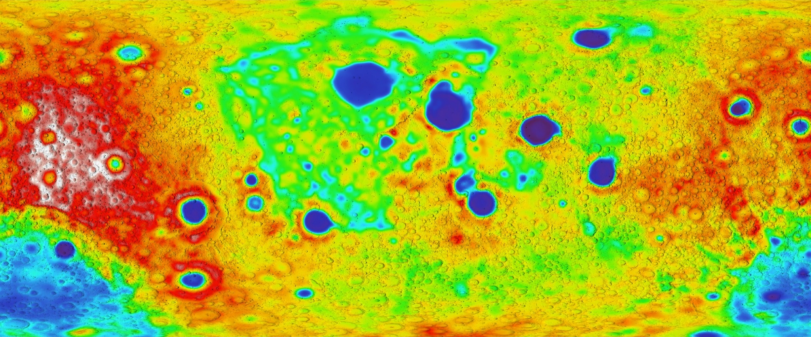
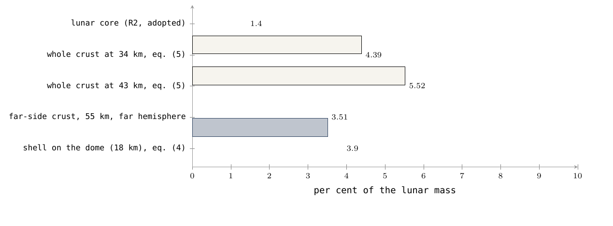
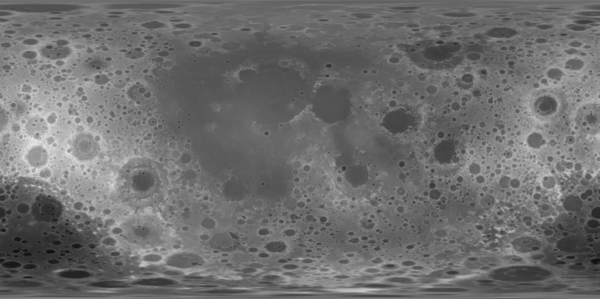
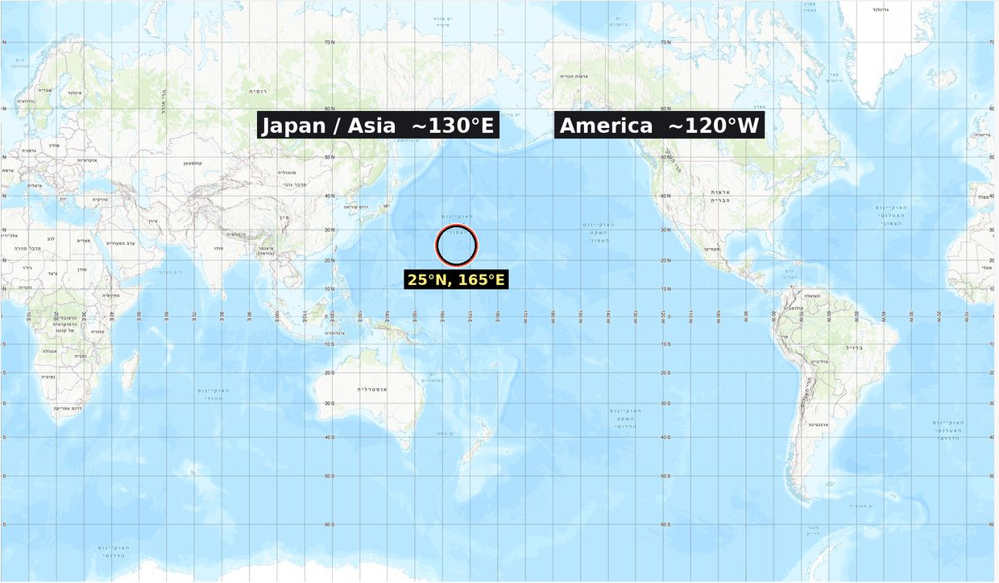
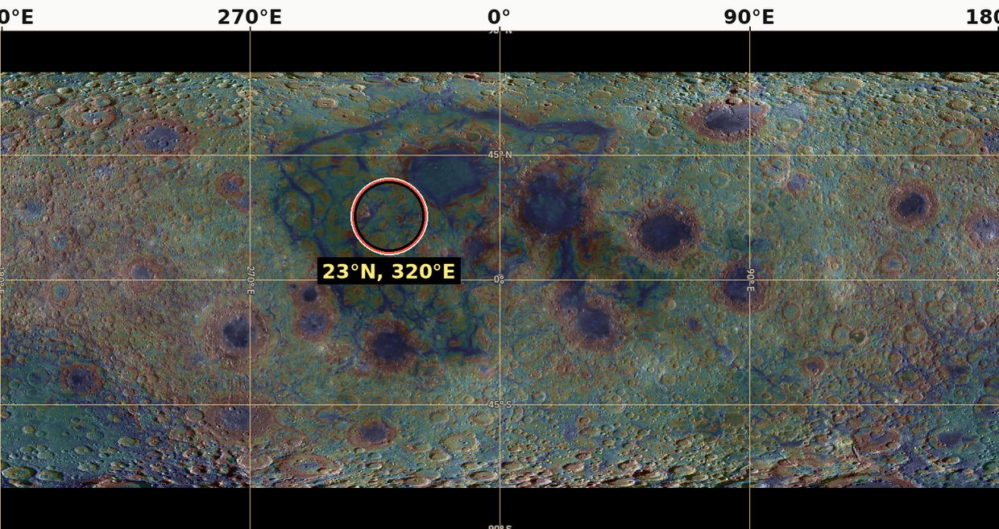

11. 要求
机制要求什么、月球具有什么、以及尚待解决的问题
本节界定构成月球形成环境以及 LEF 模型（Lunar Elevation & Fission）的动力学条件、物理参数和质量收支。
要求所由导出的环境
模型中的每一项力学要求都导出自月球形成时期的物理状态图景。下表汇集了作为所有地球物理机制共同基础的数值与动力学基准线；凡称“机制要求”某一条件之处，其含义是该条件直接由这些参数导出。
模型严格区分所假设的形成环境与今日所测得的现代月球指标。若无一个在物理上将两种状态联系起来的模型作为中介，不得将对晚期状态的观测用作初始条件。现今的月球经历了数十亿年的冷却、残余火山活动和表面撞击改造；现代形态特征既可能是形成时刻的古老产物，也可能是独立的后期附加，二者必须完全区分开来。
情景环境的参数、数值与方法地位一览表
| 物理领域 | 情景环境与严格数值参数 | 方法地位及在模型中的作用 |
|---|---|---|
| 时间与年代学 | 情景始于约 45 亿年前（）；保留至多约 6 亿年（）的时间窗口以供检验。在本系列的粗略时间轴上，从隆起开始发展到 38.73 亿年前月球释放，恰好经过 6 亿年：约 4 亿年用于隆起与梨形体的发展，约 1 亿年用于扁化阶段，另约 1 亿年直至物理释放时刻。 | 情景假设。地壳与玄武岩之间的地质年龄差并不构成对力学构建持续时间的测量；玄武岩年龄标定的是后期火山喷发，而非其下方原始硅铝质地壳的形成。 |
| 初始母体质量 | “母体”定义为月球分离之前的地球，因此其质量严格等于现代地球质量（）加上现代月球质量（）。 | 严格输入。在动态物质转移过程开始之前，未来月球的质量完全且不加区分地包含在母体质量之中。 |
| 转移后的参考质量 | 本系列的输入。沿质量转移路径，必须定量追踪力学连接的质量以及散失到太空中的物质组分；在中间阶段，部分物理质量已不在地球中，但尚未集中于月球。 | |
| 母体半径 | - 体积半径（等体积球）：6,517 km。 - 初始结构示例中的赤道半径：6,721 km。赤道半径大于体积半径，因为高速自转的天体在其赤道处发生离心膨胀。 | 不同的物理数值。这些量在同一动力学方程中不可互换或相互代入。 |
| 自转速率（一日长度） | 参考示例中初始为 5.5 小时；在物理释放时刻恰为 5.77 小时。梨形体的伸长在力学上使自转减慢（转动惯量增大），而核心的汇聚与沉降则使其加快（Paper 2）。 | Paper 2 可接受范围内的可变值。自转速率随角动量的变化（在无外部力矩时保持恒定）和转动惯量的变化（衡量质量相对于轴的分布）而改变。该机制类似于花样滑冰运动员：向外移动的质量（梨形体伸长）使旋转减慢，向内收拢的质量（重铁沉入核心）使其加快。 |
| 共转线距离 | - 自转周期为 5.5 小时时：15,818 km。 - 释放时刻（5.77 小时）：16,331 km（对无质量检验粒子），16,399 km（计入月球质量的二体计算），以及沿 22.5° 释放纬度的 17,287 km（Paper 2 和 4）。 | Paper 2 中的状态与动力学定义。当月球的质心恰好到达共转线时，月球被释放（共转线是指与地球同步旋转的天体以自由轨道速度运动的距离；在此距离以内，天体的速度不足以绕行，必须由力学连接加以维系）。在一日为 5.77 小时时，该线明显接近地面，距离为 16,399 km（约 2.6 个地球半径）。共转并非释放的充分条件：力学连接必须断裂，而被释放的天体必须在结构上经受住地球的潮汐力。 |
| 引力场 | 该动态场在局部上取决于地理位置、已转移的物质质量以及内部密度结构。 | 初始赤道估计值：母体上约 8.25 m/s²。该值不代表月球上的内部引力；它低于现代地球表面重力，因为母体赤道距其质心更远，且极端的自转速率以离心作用抵消了部分引力。 |
| 早期月球天体的尺度 | - 平均密度为 1,500 kg/m³ 时半径约 2,270 km。 - 平均密度为 2,600 kg/m³ 时半径约 1,890 km（对完整目标质量而言）。 | 来自 Paper 3 的示意性几何状态。这些数值代表天体在各密度水平下的理论半径；天体越热、越轻、越富含挥发性气态组分，其体积和尺度就越大。现代月球比二者都更致密、更小，不应将这些数据视为连续计算的收缩历史。 |
| 内部结构组织 | 金属相与硅酸盐相的连续、持续分异（Differentiation）过程：重铁在重力作用下沉向中心，轻的硅酸盐上浮，这既发生在地球体积之内，也发生在正在发展的月球天体之内。 | 相容性约束。该机制必须与转动惯量值以及放射性时钟的年代测定数据相协调。现代月球存在一个小核心，并不直接指示地球核心在那一古老时刻的结构状态。 |
| 质量与物质来源 | 由两个地球来源同时供给：深部地幔储库，以及与之并行的母体外层硅铝质（）外壳层，后者随天体一同上升并成为月球穹丘的表面。 | 单一天体与统一的质量收支（Paper 3）。硅铝层（sial）是地球富含硅和铝的轻质外层，位于较致密的硅镁层（）之上。 |
| 喷出机制 | 深部地幔物质经由岩石圈外壳中专门的开口和通道垂直上升。 | 力学定义。物理喷出不被定义或计算为从表层外壳本身撕下或扣除的物质。 |
| 挥发性组分与物质 | 地球体积内存在广泛而巨量的古老挥发物（Volatiles）储量。挥发物定义为易于转变为气相的物质——首先是水（）——其存在在物理上降低了承载它们的物质的熔点和力学刚度。 | 缺乏经验证的浓度。整个地质系统没有经验证的浓度值；其相态——溶解态、致密超临界流体或气相——完全取决于岩石静压力、温度和化学成分。 |
| 大气与热冷却 | 向太空的传导与对流传热；存在一个内部动态循环，包括挥发性组分的上升、冷却和再次下沉。 | 能量收支约束。天体的冷却过程要求向外部空间净辐射热量（Net Radiation）；内部物质循环本身并不改变总能量收支，因为在系统边界内从一个热水平传递到另一个热水平的热量并不被定义为系统散失的热量。 |
| 流变学与黏度 | 流变学指标界定地质物质如何流动或在力学上抵抗变形（Strain）。岩石圈外壳在表面寒冷而刚硬，但在其底部可移动且具黏性；与内部的工作界面是力学刚度最低的层。 | 结构保存约束（Paper 3）。模型要求外层外壳足够刚硬，以在结构上保存其撞击坑的形状——具有 的高黏度——并位于可移动的黏性内部之上。黏度单位（）衡量对流动的阻力；在此阈值下，地壳在相关时间尺度内不会发生显著流动，因此撞击坑保持其几何形态。 |
| 岩石圈外壳参数 | 物理厚度约 18 km，物质密度 2,800 kg/m³，铺展在几何底面为 6,000 km 的半球面上（总面积 ）。 | 地壳质量收支。地壳质量约为 （恰占现代月球总质量的 3.9%）。该地壳在背面半球（Far Side）上闭合，成为厚度 50–60 km 的加厚地壳（Paper 3）。加厚过程被定义为一种面积变化机制：原始大穹丘的外壳包层被收拢并收缩到成形月球较小的背面半球面积上，使其线性厚度增大约三倍。 |
| 相连几何（梨形体） | 月球穹丘构成梨形体的尖端区域，由地球物质组成，表面宽度约 9,000 km。梨形体的基部及其内部通道位于太平洋中部基里蒂马蒂岛（Kiritimati，1.9°N，157.5°W）附近，正位于 LLVP（Large Low-Shear-Velocity Province）异常之上——即最下部地幔中的大型低速区。穹丘的底部朝向母体，在释放时刻几何接触面为一个宽 3,000 km 的圆盘（相当于原始底面面积的四分之一）。 | 连接界面的特征。该地球动力学连接规模宏大且温度很高；接触盘成为位于月球正面（Near Side）的穹丘，按早期校准规则其几何尺度相当于约 41° 的角大小（结构边缘距正面中心 41°），按 Paper 3 的更新规则（§B.8）其角大小恰为 31°。月球天体在力学上从其所坐落的硅铝层上剥离，并将其作为自身结构的一部分一同带走。 |
| 地层时间顺序（情景） | 岩浆喷出过程与力学穹丘的上升重叠并同时进行；喷出流在穹丘包层完全闭合之前衰减并停止；结构穹丘的闭合在天体物理分离之前完成。 | Paper 3 的年代学约束。各动态过渡阶段的持续时间无法直接测量。 |
| 现代月面 | 在组成上由原始斜长岩地壳、撞击盆地（Impact Basins）、月海的玄武岩充填（Mare Basalts）以及后期构造改变构成。 | 区分准则。模型要求严格区分源于形成机制的地质特征与在后期历史中保存或附加在表面上的残余结构。 |
地球动力学模型图景总结
本表汇集的数据为模型的以下要求搭建了物理舞台：
1. 一个高速自转的早期地球（一日长度 5.5–5.77 小时），其质量多出相当于一个现代月球的质量。
2. 一个完全由地球自身物理物质构成的不对称梨形地球动力学结构，其西侧尖端区域凝聚并闭合为月球天体。
3. 一个高黏度的刚性岩石圈外壳，被垂直向上抬升并成为该尖端的外表面。
4. 恰好在共转线的动力学范围内发生的释放与自由引力分离。
本文后续提出的每一项力学要求，都旨在检验和分析这一动力学舞台在月球表面和地球海底上留下了哪些物理痕迹。
- 地球动力学构建机制：在 LEF 模型中，月球在经由物理界面与地球相连期间，直接由地球物质构建而成。深部地幔物质被连续供给到正在发展的月球天体之中；与此同时，位于该区域上方的母体外层岩石圈外壳随天体一同垂直上升，成为穹丘结构的表面，并凝固为地壳。
- 要求与检验准则的界定：要求被定义为：若月球（或地球）经由该机制形成，则其必须呈现的地球物理或几何特征。每项要求以三个严格部分加以详述：模型必须满足的力学条件、检验该条件的定量指标，以及与该要求不相符的测量结果（可检验条件）。分析依托于各项独立的要求，而非累积的符合度评分，因为若干符合可能代表以多种方式观测到的同一物理事实；而某一项要求中明确的不符合则就其本身加以审视，只涉及该要求及其机制，与其他符合的数量无关。
-
七项核心要求的范围：本文检验七项基本要求：
- 与地球来源完全的同位素亲缘关系。
- 金属相的转移量受月球存在一个小核心的限制。
- 地壳厚度的地层不对称。
- 与连接侧直接相关的形态定向。
- 冷却年代学与地壳结构的保存。
- 质量转移期间挥发物的可获得性。
- 地壳质量分布与质心偏移之间的数学相关。
-
现代数据解释的局限：现今的地质数据支持一般形态特征的存在，但其本身并不证实这些特征的形成机制：
- 月海玄武岩的年龄并不决定其下方斜长岩地壳的年龄。
- 在所采样的岩浆中测得的含水量并不直接代表构建时期挥发物的总储量。
- 现今存在同步自转锁定（每公转一周自转一周），并不证明自分离时刻起一直连续保持同步。
- 模型地壳收支与质心偏移：月球的质心相对于其几何中心有所偏移。一侧厚度增大的轻质地壳会使质心向相反方向移动。在一个经校准的数值示例中，对于 300–750 kg/m³ 范围内的密度反差（地壳物质与其下方地幔物质之间的密度差），得到 1.24–3.11 km 的计算偏移值。这是一个数学敏感性范围，而非对经验偏移的独立预测。
- 地壳质量在天体两侧的分配：质量收支表明，在结构闭合过程中线性厚度增大三倍的穹丘外壳，完全提供了背面（Far Side）的地壳质量。该质量相当于月球总质量的约 4%，与 GRAIL 任务（NASA）的重力结果精确相符。正面（Near Side）地壳是一个独立的组成部分：它由与天体一同剥离的地球基部硅铝物质构成，在接触区上方经历了完全熔融，并被深部热量热力抹平；该地壳在月海盆地正下方呈现其最小厚度，而月海盆地被定义为结构开口。
科学论点与预测
- 源物质的同位素匹配：月球物质必须与地球物质相同。氧同位素（ 和 ）的经验测量在 （百万分率）的严格精度范围内显示完全匹配。
- 核心体积限制：沿梨形体上升的质量流携带了轻质硅酸盐和仅少量金属相。月球地震核心的实测半径仅为 330 km，约占月球总质量的 1.4%。
- 地壳厚度不对称：地壳必须在旧力学连接区的对面更厚，即穹丘冠部承载外壳、背面最先冻结的位置；GRAIL 任务数据证实背面地壳显著更厚。
- 表面固定（定向保持）：月球天体必须保持其原始连接侧直接朝向地球。
- 热闭合年代学：背面地壳必须在正面的炽热供给流衰减之前完成结构闭合并在结构上得以保存。
- 挥发性组分的存在：质量供给与地球动力学流动过程需要挥发物的存在以降低黏度。熔体包裹体（Melt Inclusions）——在火山喷发之前被密封在晶体内的微小岩浆液滴——显示 615–1,410 ppm 的含水量。
- 经验质心偏移：月球的质心实际向正面偏移 2 km。由模型公式导出的地壳形状，在标准密度反差值下给出 1.2–3.1 km 的理论偏移。
数据、机制与完整数值参数的组织
| 主题 | 发现 | 来源 | 在模型中的状态 |
|---|---|---|---|
| 同位素组成 | 氧同位素在 范围内完全匹配。 | 样品的实验室测量 | 要求 1（已证实） |
| 月球核心尺度 | 严格地震半径：330 km。核心质量：约占天体总质量的 1.4%。 | 阿波罗台网的地震数据 | 要求 2（已证实，硅酸盐流动的证据） |
| 地壳不对称 | 背面显著厚于正面；背面地壳质量约占月球质量的 4%。 | 全球重力图（GRAIL / NASA） | 要求 3（已证实，冻结的穹丘冠部） |
| 封存挥发物浓度 | 封闭晶体内的熔体包裹体含水量为 615–1,410 ppm。 | 火山晶体的化学分析 | 要求 6（已证实，源区挥发物的证据） |
| 质心偏移（实测） | 相对于几何中心向正面的线性偏离为 2 km。 | 卫星测高与重力测量 | 要求 7（已证实） |
| 质心偏移（模型） | 对于 300–750 kg/m³ 的密度反差，计算理论值为 1.2–3.1 km（精确敏感性范围：1.24–3.11 km）。 | 穹丘质量收支方程 | 模型的数学相容性 |
| 同心分区格局 | 月球表面围绕正面中心排列成三个同心区：接触区（最后暴露）、基部环带和背面（穹丘的古老表面）。 | 表层重力梯度图（GRAIL） | 要求 8（Paper 11 中新增的第八项特征） |
| 残余梨形体机制 | 七项地球动力学特征：梨形体的自引力、回落机制、太平洋 LLVP、正面 KREEP 组分、作为计量的地球核心、外来物质的缺失，以及两极随撞击坑直径而变的撞击坑密度增高。 | 形态与地震综合分析 | 集中列于 C.6 节 |
| 开口机制与火星卫星 | 三项动力学特征：34 个月海盆地，被定义为结构开口及回落物质的来源；South Pole–Aitken 盆地之下的两个物质出口及其以南的一个穹丘；以及从地球赤道上单一喷出管射出的两颗火星卫星（火卫一和火卫二）。 | 喷出与动力学轨道模型 | 集中列于 C.7 节 |
要求的结构整合
模型并不把七项月球特征视为七个彼此独立的统计证明。地壳厚度、质心偏移、月海盆地以及部分地质年龄记录，在物理上被界定为单一的结构现象，经由四种不同的观测途径得以反映。
每一项形态符合都与将其转化为严格定量检验所需的专门计算规程一并给出（例如多体系同位素收支、金属质量转移速率以及地壳—偏移联合拟合）。这些方程连同其精确的物理不符合阈值，详列于 D.3 节。模型面临的核心目标，是证明一套统一且固定的参数能够同时产生所有这些结果。
引言——从机制到痕迹
方法特征与分析目的
- 将物理与数据相联系：在 Paper 2–3 界定了构建路径与地球动力学机制之后，Paper 11 的核心任务是将情景的物理与可独立检验的经验数据联系起来。月球的形成过程必然留下明确的物理与形态标志：体现在其化学与同位素组成、其内部结构、地壳厚度的不对称、其朝向所属行星（地球）的定向，以及其表面经历冷却与热闭合的年代顺序之中。
- 火星情形的分离：Paper 10 是一项应用于火星系统的独立检验。Paper 10 框架内出现的数学上的成功或物理上的困难，均不改变 LEF 模型为地球情形所确定的严格参数。
结构性要求工具的界定
指导本文的理论工具是要求。每项要求都严格地基于三个组成部分加以界定：若月球经由 LEF 机制形成则必须存在的地球物理特征、检验该特征的精确经验测量，以及与该要求不相符的数值或结构结果。
各项要求分别汇集，不加权为累积的数学评分，这出于两个严格的方法论理由：
1. 结构的相互依赖（单一的物质分布）：月球的各项形态特征并非彼此独立。一侧（背面）加厚的地壳、向相反一侧（正面）偏移的质心、月海盆地在薄侧的集中，以及部分地质年龄记录——在模型中全都是单一力学物质分布的直接结果。若将它们作为独立分值计入累积评分，就意味着对同一物理事实进行了重复计数。
2. 独立检验原则（每项要求均可检验）：加权评分会使大量一致和偶然相关压倒单一参数上的决定性不一致。相反，带有自身不符合条件的要求是就其本身加以审视的：某一项要求中明确的不符合记在该要求名下，不会被其他符合所掩盖。Part B 分别报告每项检验的结果（B.9 节）。
模型结果的时序分类
本文的陈述顺序是先给出力学要求的界定，后给出经验观测。这一结构旨在帮助读者检查逻辑一致性，但并不能将已知数据变成在发现之前就已记录的预测（Predictions）。为保持科学上的严谨，模型严格区分三类结果：
- 导出结果：在情景明确的基本假设下，直接由物理方程导出的数值或趋势。
- 事后拟合（Postdiction）：将模型参数拟合到科学界已有的经验观测。
- 预测：模型提出的、尚未经经验数据检验的独立结构性或数值性断言。
一致性检查约束：由外部研究者在科学文献中完成、同时又被用作模型内部某一自由参数选取之输入数据的测量，仅被界定为内部一致性检查（Consistency Check），不应视为对该机制的独立经验支持。
本文四个部分的结构
下表界定了 Paper 11 各部分严格加以裁定的核心力学问题。
| 本文部分 | 该部分裁定的结构性问题 |
|---|---|
| PART A | 地球动力学情景究竟要求什么？每项要求依托于哪些物理假设？ |
| PART B | 经验数据中实际测得了什么？从每项地球物理测量中可以推断什么？ |
| PART C | 还有哪些标志和机制值得审视，而不将其计为模型中已有并经证实的结果？ |
| PART D | 哪些结果会与各项要求不相符？哪些仍是开放的？本工作的创新要素是什么？ |
七项要求及其假设
Part A 阐述 LEF 模型的构建路径对月球提出了哪些要求。在模型中，月球在与地球相连期间被构建：深部物质被向上供给到一个不断增长的天体中，而该区域上方的地球外层外壳随之一同上升，成为穹丘的表面。如果月球是这样形成的，它就不可能看起来像任意一个天体；它必须带有某些特定的痕迹。下列七节中的每一节都指出一项这样的痕迹（R1–R7），说明模型为何需要它，并描述将以何种测量来检验它。测量本身在 Part B 中按同一顺序加以审视，因此 Part A 的每一节在 Part B 中都有对应的一节。
问题与导出方法
- 空间几何的局限：相连天体的几何本身并不决定地壳的化学组成、热冷却速率或形态细节。经由宽阔而炽热的连接与地球相连的天体具有正面与背面、受供给区与闭合区；但诸如所转移的金属质量、每一侧壁的冻结速度，或随供给流一同移动的水量等参数，并不能仅由结构形状导出。
- 物理结合的方法：每项力学要求都附有定量导出它所需的补充物理假设。这种做法使得能够严格区分直接源于几何的组成部分与源于附加动力学假设的组成部分。一项未通过的经验检验会精确指向模型中与之不相符的具体组成部分。
- 测量范围（R1–R7）：七项要求涵盖七个独立的测量领域：同位素（R1）、核心大小（R2）、地壳不对称（R3）、月球相对于地球的定向（R4）、冷却与保存的顺序（R5）、挥发物储量（R6），以及地壳分布与质心偏移之间的数学关系（R7）。
A.1R1——与地球物质的亲缘关系
它要求什么
- 与地球储库的整合：在地球动力学情景中，构建月球的全部物质都来源于地球。因此，在对熔融、相分离、蒸发和地质分异过程进行定量权衡之后，模型要求月球与物质所来自的地球储库在化学和结构上完全匹配。
- 储库（Reservoir）的界定：具有自身独特特征和化学组成的大型物质体——例如地球的深部地幔（Mantle），或其外层硅铝质外壳（）。
- 地球混合物约束：由于模型将月球物质导出自这两个明确的地球储库（深部供给流与上升的外壳），最终月球天体的组成必须在数学上可由这两个来源的直接混合物得到。
模型为何需要它
- 化学印记的必然性：这一特征是连接机制最直接的物理结果：如果物质质量是从地球转移过来的，它就必然带有母体的化学指纹。
- 同位素作为来源标签：用于这一识别的核心体系是同位素比值。同位素是同一化学元素的不同形式，彼此仅在原子核中的中子数上不同，因而在原子质量上不同。同位素比值在太阳系不同行星天体之间呈现严格的差异，且在天体凝聚阶段之后不能被显著改变。因此，它们构成绝对的来源标签。
它不要求什么
-
否定浓度的绝对相等：共同的地质来源并不要求每一种化学元素的浓度或每一个单独的同位素比值在数学上相等。按照情景，允许并预期的差异包括：
- 放射成因同位素：由天然放射性衰变产生的同位素。两个在物理上分离、含有不同数量母体同位素（Parent isotope）的储库，在地质时间中会积累不同数量的子体同位素（Daughter isotope），即使分离时刻是从完全相同的同位素组成开始的。
- 质量相关分馏（Mass-dependent fractionation）：在蒸发、熔融或晶体结晶过程中，轻同位素与重同位素之间的力学分选与筛分（轻同位素更容易逃离系统或在其中移动，类似于液体中最先蒸发的轻组分）。
它如何被检验
- 多体系收支准则：该检验判定，两个地球来源贡献的定量收支能否同时解释若干不同的同位素体系以及整体组成（Bulk composition）。
- 单一指标的局限：仅测量氧同位素并不足以证实整体收支。氧值是科学界最为人熟知的经验匹配——地球与月球之间的同位素差为 （百万分率；详见 B.1 节）——但力学要求 R1 只有在下述情况下才被界定为已证实：两个地球储库的一个数学混合物，在允许的物理过程下，同时解释氧值、其余同位素体系以及天体的整体化学组成。
A.2R2——小型金属核心
它要求什么
- 受限的体积与质量约束：月球具有一个小而有限的金属核心：其地震半径仅约 330 km，约占月球总质量的 1.4%（详见 B.2 节）。对于其尺度的行星天体而言，这一数据被界定为异常小的比例。
- 供给流约束：在模型中，月球主要由下方供给的硅酸盐物质（）构成，其中仅含少量金属相。
- 要求的双侧边界：内部转移机制必须携带足以提供构建现有核心所需金属储量的物质质量（下限），而又不转移超出允许范围的金属比例，以免核心体积超过观测值（上限）。
金属量取决于什么
地球动力学介质中所转移的金属质量，由源区的四个严格物理参数共同决定：
1. 游离金属比例：供给物质中未结合金属相的浓度。
2. 金属液滴尺度（Droplet Rheology）：流体中金属液滴的物理大小。巨大而沉重的液滴在重力作用下穿过缓慢的上升流重新下沉，而微小的液滴则随流体被向上携带（这一物理机制类似于细沙粒在湍急的溪流中保持悬浮和运动，而沉重的砾石则沉到河底）。
3. 垂直流速：硅酸盐流的上升速度与金属液滴的流体动力学沉降速度之比较。
4. 氧化状态（Oxidation State）：决定化学上被束缚在硅酸盐矿物晶体结构中、而非以游离金属相存在的铁（）的比例。结合在矿物中的铁随硅酸盐相一同移动，无法在物理上分离并加入金属核心的体积。
核心质量收支方程
在来自上升岩石圈外壳的金属相贡献被界定为可忽略的物理情形下（因为硅铝质外壳是贫游离金属的轻质物质），核心质量收支从左到右读作一个由三个组成部分构成的数学链：
其中各参数严格界定如下：
- ：核心在现代月球总质量中所占的线性比例。
- ：经供给提供的深部（内部）地幔物质在天体总质量中所占的质量比例。
- ：内部供给物质中游离金属的比例。
- ：金属沉降并加入天体中心核心的流体动力学效率。
收支的数值导出：取现有经验核心值 1.4%（），并代入 Paper 3 中相当于月球总质量 95% 的深部地幔物质参数（；模型范围 94%–96%），方程规定了如下严格的乘积值：
这意味着，向上供给的深部地幔物质中恰有 1.47% 必须由实际到达天体中心的金属相构成。若供给流中只有部分金属成功沉入核心，则初始供给物质必须相应地携带更高的金属浓度。该方程将“少量金属”这一定性说法转化为 Paper 3 的机制必须解释的可测物理量。

图 4 详解 · 作为定量指标的储量要求 R2
- 横轴（）：表示供给物质的内部质量比例（）。
- 纵轴（）：表示构建核心所需的乘积值 。
-
模型曲线组：
- 深蓝色实线：表示模型中经证实的核心值，即 1.4%。
- 红色虚线：表示 1.0% 的核心下限。
- 红色点线：表示 2.0% 的核心上限。
- 数学行为：所有曲线自左向右单调下降；月球质量中由深部物质构成的比例越大，其每一单位体积所需携带的金属浓度就越低。将参数 减半，恰好使纵轴上所需的乘积值加倍。
- 黑色参考点：标示 Paper 3 严格参考情形的数值： 以及 1.47% 的乘积值。由于模型将月球质量的 94%–96% 置于深部物质中，其几何位置位于图的右端，代表系统的最低要求点。
它如何被检验
- 验证规程：该检验被界定为一项定量预测，由 Paper 3 的质量转移与地质分异方程导出，确定该机制在物理上能够产生的核心比例范围。这一预测直接与月球地震学测得的经验核心指标并列比较（详见 B.2 节）。
- 分异（Differentiation）的界定：行星天体基于密度反差在力学上分离为不同层的过程——重的金属相在重力作用下沉向中心，轻的硅酸盐相上浮并留在其上方。
A.3R3——与开口相关的不对称
它要求什么
- 地壳厚度不对称：地壳必须在背面（Far Side）比在正面（Near Side）更厚。地球动力学模型要求这一厚度分布围绕结构开口排列——即月球天体经由其得到供给、并借以坐落于地球之上的力学连接。地壳必须在旧连接周围较薄，而在其相对一侧较厚。
模型为何需要它
两种物理机制同时沿同一地球动力学方向起作用：
1. 热机制：一侧（正面）存在炽热的连接，而相对一侧（背面）在太空中辐射冷却更为有效，这意味着远离连接处的地壳加厚更大。该机制类似于放在火焰上的锅：远离火焰的锅壁最先冷却并变硬。
2. 几何机制（穹丘闭合）：背面是穹丘的原始表面，并一路携带着地球的岩石圈外壳。当这一表面在背面半球上闭合时，该地壳的线性厚度增加了三倍。这一几何机制类似于一块铺在穹顶上的布，随后被收拢并收紧包裹在一个球上：同一块布现在覆盖的表面积小得多，因此其厚度增大。覆盖穹丘的约 18 km 外壳在一个半球上闭合并加厚三倍，形成 Paper 3 所界定的 50–60 km 背面地壳。
- 正面的历史：正面是该结构的基部。其外环保存了天体所坐落的地球表面的硅铝层，并在天体剥离时将其一同带走，而炽热的中央接触区则因受热而完全失去了这层硅铝层，并在重力作用下被抹平。
质量收支约束
- 地壳质量守恒定律：在严格的质量守恒定律下，地壳厚度完全源于闭合、弹性/塑性变形与热冻结的结合。几何压缩不得计为新质量的增加。外壳被收拢时变得更厚，但并未增加物质；同样的质量铺展在更小的面积上。因此，厚的背面地壳的质量必须完全由事先存在的外壳质量来解释。B.3 节表明，穹丘外壳与背面地壳在质量收支上相互吻合，精度约为 10%（在较早的计算版本中为 7%）。
它还假设了什么（结构存续约束）
- 早期记录的耐久性：背面厚地壳的导出假设：混合、内部转移、化学成分变化，以及由回落物质或大型撞击盆地形成的后期撞击坑，均未抹去原始的不对称。闭合的穹丘所造成的结构必须在随后的地质事件中存续下来。
- 全球“头盔”近似：平滑的头盔形状被用作长波长组分（全球趋势）的数学近似：地壳被描述为在天体的一个极点（背面中心）最厚，并向相对的极点（正面中心）线性逐渐变薄，犹如一顶冠部比边缘更厚的头盔。模型只比较大尺度趋势，而不比较每一个局部地形细节（以 B.3 节中的方程 3 表示）。没有任何导出要求每一个局部点都比其前一点更厚；盆地、月海和局部加厚预期会打破平滑曲线，而该要求只涉及整体趋势。
它如何被检验
- 经验检验依托于由重力与地形数据结合导出的全球地壳厚度图，主要来自 GRAIL 任务（B.3 节及图 5）。地壳必须随着与正面旧接触区的角距离而呈现逐渐加厚，且背面地壳在质量收支上必须容纳地球穹丘外壳的质量。
A.4R4——连接时期的定向
它要求什么
- 严格的定向锁定：月球始终以同一面朝向地球（同步自转——每绕轨道运行一周，绕自身轴自转一周）。模型要求这一面与地球动力学连接侧直接相关：月球与梨形体相连的一侧，就是今日朝向地球的一侧。
模型为何需要它
- 相连天体的相对转动约束：一个其力学连接阻止自由相对转动的天体，会使其连接侧始终朝向母体。它仍随整个系统的旋转在惯性空间中转动。
- 舞者类比：该机制类似于两位手拉手一同旋转的舞者：每个人始终面对另一个人（没有相对转动），然而二人相对于房间的墙壁都转了一圈。相连的月球处于同样的动力学状态：相对于地球它不转动，但相对于遥远的恒星，它随系统每转一周而转一周。在适当的圆形状态下，这一定向为释放提供了精确的同步初始条件。在分离时刻，月球已经以固定的一面朝向地球，并以每公转一周自转一周的速率旋转。
还需解决什么（释放后的动力学）
-
轨道演化：在物理分离之后，模型必须求解潮汐力矩、天平动和动态形变体系：
- 潮汐力矩（Tidal Torques）：由于地球对月球质量正面部分施加的引力强于对其背面部分的引力而产生的扭转力。
- 天平动（Libration）：月球轻微的几何摆动，使地球上的观测者在一段时间内能看到略多于一半（约 59%）的月面。
- 形变（Deformation）：月球形状的塑性与弹性变化，它们改变月球对潮汐场的动态响应方式。
- 动力学轨迹约束：计算所得的动力学轨迹必须将先前的连接侧与今日朝向地球的一侧联系起来。“相连天体不能转动”这一力学表述，被相对转动的精确定义所取代：相连天体确实在空间中转动，但其角速率与系统相同（），因此相对于母体并不转动。这一章节在 Paper 4 中作动力学展开。
它如何被检验
- 经验检验将 Paper 2 中释放时刻的形状、自转速率和角动量数值输入 Paper 4 的轨道计算体系，并在数学上检查连接侧是否仍为朝向地球的一侧，或重新成为这一侧（B.4 节）。现今同步性的存在本身并不构成对模型的证实性检验，因为长期的潮汐演化也能够从其他形成路径的初始条件产生同步性。
A.5R5——确定的冷却与保存顺序
它要求什么
- 不对称的稳定年代学：模型要求，位于连接对面的背面在力学上稳定下来并开始保存其地质撞击记录，早于受供给的炽热区域（正面连接附近）这样做。
模型为何需要它
- 包层闭合机制：连接对面的地壳包层闭合，使该半球得以更早地保存形态，而正面的供给区继续获得热量和质量的供应，因而持续升温并经历再改造（Recycling）。一旦穹丘在背面半球上完成结构闭合，这些表面便不再更新：它们经历辐射冷却，在力学上变硬，并开始保存落在其上的撞击坑。相反，正位于炽热供给流之上的正面经历了持续的构造与热改造，因此其残存的撞击记录开始于较晚的时刻。
- 地质单元的界定：该要求仅涉及特定地壳单元稳定并保存记录的时间；并不意味着背面的每一个物理样品在年代上都比正面的每一个样品更古老。单元被界定为具有单一成因来源和统一历史的地壳区域，例如高地平原（Highlands）或撞击盆地的坑底。
四种地质年代时钟（避免冲突）
为保持严谨，模型严格区分四种不同的同位素时钟，并规定将背面的一种时钟与正面的另一种时钟相比较，不能提供关于闭合顺序的指示：
1. 古老外壳物质的年龄：物质本身在上升之前的年龄；在模型中，它在穹丘上升之前形成于地球外壳之中。
2. 地壳固化年龄（Solidification Age）：新地壳越过固相线温度而凝固的确切时刻。
3. 撞击年龄（Impact Age）：造坑撞击事件熔融部分既有地壳或重置（Reset）其同位素时钟的时刻。
4. 玄武岩充填年龄（Mare Basalt Age）：在后期阶段充填撞击盆地的深色镁铁质岩浆的年龄。
- 科学预测约束：“正面全部地壳在年代上形成较晚”这一笼统预测并不源于该情景。地球动力学预测仅涉及天体两侧具有相似来源与形成过程的地壳单元之间的闭合与力学保存顺序。
它如何被检验
- 经验检验在两个半球上界定闭合与保存单元，对具有相似成因性质的过程测定年代，并在将造坑事件与玄武岩熔岩充填事件完全分离之后，检查地球动力学时间顺序是否得以保持（B.5 节将四种时钟并列以便对照）。
A.6R6——机制所需数量与状态的挥发物
它要求什么
- 相态约束与相的刚性：挥发物被界定为易于转变为气相的组分——主要是水（）、二氧化碳（）及类似化合物。在 Paper 3 中，它们的存在对于质量供给机制的动力学运作至关重要。
-
在系统中的力学作用：如果挥发物用于降低密度、改变流变性质或建立供给的静水压力，则该机制必须在沿整个上升路径物理上可行的浓度值和热力学相态下运作：
- 密度降低：降低深部地幔物质的比重，使其能够浮起并垂直上升。
- 黏性流变：水改变熔融或部分熔融物质的黏度，使其更易于流动和发生力学变形（类似于增塑剂的作用）。
- 喷出压力的建立：以游离气相形式存在时，挥发性组分产生膨胀压力，以矢量方式将供给流向上推动。
- 深度约束：这些作用中的每一项，都要求在沿地球动力学管道的每一给定深度上，存在一定数量、处于特定相态（溶解于熔体中、作为致密超临界流体或作为游离气体）的挥发物。
什么不能满足它（否定部分证实）
- 不依赖于局部存在：仅仅在现代月面的某一地理位置发现水，并不足以证实要求 R6。在月球样品中识别出水，只证明其在天体中普遍存在；并不能证明在供给流需要它们的地质位置上，它们以所需的质量体积或正确的相态存在。
- 否定深部的稀疏气泡：假设存在古老的蒸汽包层，并不允许在数学上将稀疏气泡置于任意岩石静压深度。在大深度处，高静压在物理上迫使挥发物保持溶解于熔体之中，或将其压缩为极其致密的体积。每一深度上的相态必须直接由真实的压力（）、温度（）和化学组成（）值导出，而不能为迎合机制的需要而任意设定。
化学—热力学结合规程
- 严格的范围重叠：运行 Paper 3 机制所需的挥发物压力与浓度条件，必须完全落入一个独立的地球化学与热力学模型所允许的范围之内。
- 损失与转移收支：计算必须权衡质量损失、熔体中的质量、力学抛射以及不同储库之间动态转移的全部阶段：部分水经辐射逃逸到太空，部分仍溶解于岩浆相中，部分随抛射物（Ejecta）一同喷出，部分在地质储库之间转移。今日在实验室中识别出的水，仅代表经历所有这些阶段后存留下来的物理残余。
它如何被检验
- 该检验由 Paper 3 的方程导出沿垂直供给路径的最低浓度与热力学相态。这些数值经由一个损失与地球化学分异的函数模型传递，由此导出的预测与阿波罗样品中测得的经验浓度相比较，例如封闭的熔体包裹体（Melt Inclusions）中记录的 615–1,410 ppm 水含量（详见 B.6 节）。
A.7R7——地壳分布与质心
它要求什么
- 几何质心偏移：月球的物理质心与其外部形态轮廓的几何中心并不重合。它呈现出向正面半球（Near Side；详见 B.7 节）约 2 km 量级的恒定线性偏离。模型要求，地壳厚度分布——背面厚、正面薄——独立地产生这种类型、且恰好沿这一矢量方向的几何偏移。
它为何产生（引力机制）
- 地壳质量亏损：在外部轮廓确定的天体中，在背面半球用轻质地壳物质替代致密地幔物质，会在该侧造成质量亏损（质量不足）。由于地壳密度低于其下方地幔的密度（），在地壳厚度增大之处，低密度物质占据了否则会由致密地幔物质填充的体积。
- 平衡点的移动：其结果是，在同一几何轮廓内，背面的总质量少于正面。
- 软木类比（引力约束）：该机制类似于一个在一侧嵌有一块由软木等轻质材料制成的厚补片的球：其引力平衡点（质心）必然移向相反的一侧。不对称地壳的结构贡献以矢量方式将质心推向薄侧（正面）。这是由确定的密度条件导出的直接引力结果。
综合收支的组成部分
行星天体的总质心是若干结构贡献的矢量和，不能仅依赖地壳一项：
1. 地形：外表面的高程。
2. 地幔与核心的不对称。
3. 岩浆侵入体（Magmatic Intrusions）：在地壳体积内固化的致密硅酸盐熔体岩体。
4. 盆地充填（Mare Basalts）：充填正面大型撞击盆地的致密、富铁玄武岩熔岩。
- 总符号约束：这些地质组成部分中的每一项都以其自身的幅度和方向移动引力平衡点。地壳的贡献本身将质心推向正面，但只有当所有这些结构贡献的综合矢量和指向正面时，要求 R7 才在地球动力学上被界定为已证实。
它如何被检验
- 单一密度模型约束：检验规程要求使用统一且固定的物质密度数学模型，同时计算地壳厚度与质心偏移。严格禁止仅为获得所需偏移值而独立调整或改变密度值。
- 厚度计算的局限：地壳厚度无法直接测量；它是在假设地壳和地幔密度值恒定的条件下由观测重力场计算得出的。若用一种密度确定厚度、用另一种轮廓获得偏移，则这种符合将被界定为人为的、拼凑出来的。
- 严格的数学结果：在采用单一统一密度模型的条件下，B.7 节对于在 300–750 kg/m³ 范围内变化的密度反差，给出 1.24–3.11 km 的理论偏移值。这一数值范围恰好包含了月球上观测到的经验量级。该值是计算所得的敏感性范围，而非对偏移的绝对独立预测。
七项核心要求体系总结（Part A）
随着要求 R7 的表述完成，将月球上每一项物理痕迹明确地与 LEF 模型形成路径中某一确定阶段联系起来的理论结构便告完成：
- R1（与地球物质的亲缘关系）：将化学与同位素组成与储库的地球来源联系起来。
- R2（小型金属核心）：界定供给流的质量收支与流体动力学。
- R3（地壳厚度不对称）：直接导出自穹丘闭合及其加厚机制。
- R4（连接时期的定向）：由于相连天体的自转锁定，被界定为动力学初始条件。
- R5（冷却与保存顺序）：规定不对称的地壳稳定年代学。
- R6（挥发物）：确定喷出管道的热力学与流变学约束。
- R7（质心分布）：使地壳的几何结构与全球重力场相协调。
Part B 现在将每一项要求独立、分别地与经验数据和测量相对照。
七项要求与测量的对照
Part A 确定了一个由地球抬升而构建的月球必须呈现的面貌：七项要求，每一项旁边附有产生它的物理假设。Part B 现在将每项要求与相关的测量并列。对每项要求实施四个严格步骤：测得了什么、模型如何解释、裁定该问题的检验，以及与该要求不相符的结果。B.1–B.6 节讨论同位素、核心、地壳与月海、同步自转、月球记录的时钟以及水；B.7 和 B.8 继续讨论质心与暴露区。
问题与区分方法
- 单一观测的唯一性局限：在月面上识别出的某一地质或重力特征，在理论上可能与若干不同的形成机制相容。例如，小型金属核心或背面的厚地壳，可以用不止一种方式来解释，因此仅凭其经验发现，并不构成只支持 LEF 模型的明确证明。
-
模型中科学术语的界定：为保持严谨，以下三个词在此按如下精确的科学含义界定：
- “相符”：表示完全匹配——经验观测与模型所要求和预言的相一致。
- “开放”：表示将形态符合转化为决定性检验所需的定量计算或比较尚未完成；研究的名称与目标已经确定，但数据尚未完全处理。
- “不满足”：严格保留用于在预先界定的地球动力学条件下出现明确的物理或数值不符合的情形。
B.1R1——同位素相似性说明了什么
1. 测得了什么
- 三氧同位素体系：测量了氧元素稳定同位素的比值：、 和 。常规热力学过程，如岩浆熔融、蒸发和分离结晶，会按原子质量对同位素进行分选，使比值 的变化幅度约为比值 所产生变化的一半（因为质量差小一半）。
- 指标：定量 精确测量样品偏离全球质量相关分馏线的距离。封闭行星天体内部的改造与分异无法使这一数值发生偏移，因此 构成不变源储库的绝对指纹。太阳系中的不同天体（如火星这颗行星以及不同的陨石群）具有彼此明显不同的同位素指纹。
- 经验测量值：Young 等人（2016）的研究团队测量并报告了地球与月球之间氧值的差异：
- 数值的解读：月球的同位素指纹减去地球的同位素指纹等于 百万分率（——表示整个同位素比值中百万分之一的单位），不确定度范围为两倍标准误差 （）。这一差值在实验室分辨率的范围内在统计上等于零，表明在现有精度水平上，月球与地球具有相同的氧组成 [S1]。
2. 模型如何解释
- 情景的直接导出：对于 LEF 模型而言，这种同位素一致性是地球动力学情景直接而必然的预言，因为月球的全部质量物质都是直接从地球储库转移而来的。
- 与替代模型的比较： 这一数值代表所报告的实验室不确定度，而非由 LEF 方程体系导出的理论物理阈值；未来更高分辨率的测量可能揭示出微小的差异。在替代的大碰撞模型（Impact Hypothesis）中，月球的大部分质量来源于撞击体（Theia）的物质，如此极端的同位素匹配要求两个天体之间发生完全而大规模的流体动力学混合。由于科学文献已经提出了撞击期间的此类混合机制，这一经验数据本身并不能在相连天体的形成路径与混合撞击的路径之间提供绝对的区分能力。
3. 裁定性检验
- 多体系收支规程：该检验界定：由确定的地球储库（Paper 3 中界定的深部储库与硅铝质外壳）在数学上导出最终产物的组成，按模型规定的质量比例精确混合，并对熔融和蒸发过程中发生的质量损失与分馏进行数学权衡。预测结果必须在若干份独立的月球样品上，同时（一次性）经受住若干不同同位素体系（氧、钛、铬等）的检验。
4. 与该要求不相符的结果
- 若在数学上证明，地球储库与允许的热力学过程的任何定量组合，都无法在一个统一的体系中同时解释全部同位素数据与化学组成，则该要求将被视为不满足。
- 模型中的当前状态：氧同位素的匹配被界定为“相符”状态；整体多体系定量收支的建立被界定为“开放”状态。
B.2R2——核心是输运的定量目标
1. 测得了什么
- 全球地震测量：由 Apollo 任务安装在月面上的地震仪台网，多年来连续记录了月震（Moonquakes）产生的地震波。地震波的传播速度及其从地幔深处的反射（Reflection）方式，揭示了内部各层的厚度和密度边界。
-
核心各层的尺度：Weber 等人的综合地震模型界定了一个严格的双层核心结构 [S2]：
- 固态内核：距质心的物理半径约为 240 km。
- 液态外核：其最外缘到达距质心约 330 km 的半径（月球全球半径为 1,737.4 km）。
- 残余核心质量：核心的质量比例估计约为月球天体总质量的 1.4%。该值在模型中作为来自科学文献的比较参数保留，而非精确的独立测量。数据强调，相对于金属核心按比例显著更大的地球，月球是一个极度贫金属的天体。
2. 模型如何解释
- 硅酸盐夹带与筛选机制：LEF 模型通过对硅酸盐相的动力学偏好来解释这一数据：沿梨形体上升的垂直供给流主要携带轻质硅酸盐物质，其中游离金属铁液滴的浓度很低。经验数据与这一机制相符，但它本身并不能在无佐证的情况下证明供给物质的来源位于地球核心层最终形成之前的下方。
- 收支方程约束：代入 Paper 3 的深部地幔物质参数（），定量收支方程（Part A 中的方程 1）将供给物质中有效游离金属比例（）与其沉降的流体动力学效率（）之乘积的所需值锁定在：
- 这一严格数值（以图形方式示于图 4）成为一个确定且具有约束力的定量目标，Paper 3 的质量转移机制与液滴流体动力学必须产生它。
3. 裁定性检验
- 体积预测规程：该检验被界定为运行一个流体动力学模型，定量计算该机制在物理上能够产生的核心值范围（）。计算将基于岩浆流作为流速与黏度之函数所能向上夹带的金属质量函数，对照随后液滴在重力作用下沉向月球天体中心的沉降函数。
4. 与该要求不相符的结果
- 若证明流体动力学方程在物理上所支持的全部可能的金属夹带范围，所给出的核心质量值都显著超出科学文献所界定的允许经验地震范围（1.0%–2.0%），则该要求将被视为不满足。
- 模型中的当前状态：小型核心的存在作为固定目标参数被界定为“相符”状态；将流体动力学质量转移机制发展到定量闭合的水平被界定为“开放”状态。
B.3R3——地壳、月海与来自外部的质量
1. 测得了什么
- 高分辨率卫星重力测量：地壳厚度并非直接测量；它是由重力场在数学上推断出来的。GRAIL 任务（NASA）的两艘航天器在前后跟随（一前一后）的轨道上环绕月球飞行，以高精度测量二者之间不断变化的线性距离的波动。地下的每一处质量盈余或亏损都会施加差异性的引力吸引：先作用于领航的航天器，然后作用于尾随的航天器 [S3]。
- 布格异常（Bouguer Anomaly）的分离：结合 LOLA 激光高度计（搭载于 LRO 探测器）测得的地形高程数据，计算并扣除了由肉眼可见的形态地形所导出的重力分量。重力残差（布格异常）直接归因于 Moho 的起伏与深度变化——Moho 是轻质地壳物质与致密地幔物质之间的密度不连续界面。
- 地震锚点与全球数值：将重力起伏转换为线性地壳厚度（以千米计）需要确定地壳密度值，并在某一地理点的深度上进行校准（锚定），这基于 Apollo 任务地震台站的数据。GRAIL 数据证实存在大范围的全球不对称，给出全球平均地壳厚度为 34–43 km 的模型 [S3]，该值随所选密度及用于校准的地震锚点而变化。
数值解读约束：不应将这一数据识别或解释为“正面均匀 30 km、背面 60 km”的扁平化测量。这些数值仅是为校准模型方程而设的几何示例。

图 5 详解 · 月球地壳厚度图（GRAIL / LOLA）
- 投影参数：柱面投影（Plate Carrée），地理中心位于 0°E，纬度为 。正面（Near Side）位于地图中央，背面（Far Side）分布于其左右两侧的最外缘。
-
形态色彩图例：
- 蓝色（薄地壳）：见于地图中央、正面大型撞击盆地之下。
- 暖色（红色与白色——厚地壳）：标示地图边缘背面的高地。
- 测得的不对称数值：按正面中心与背面中心之间的直接测量，背面地壳厚约 10 km；按整个半球加权平均计算，厚约 8 km（Paper 11，§B.8）。
- 数据来源：LROC QuickMap（NASA/GSFC/Arizona State University）；GRAIL 重力处理（NASA/JPL-Caltech/MIT；Zuber et al. 2013）。
2. 模型如何解释
- 几何近似方程（头盔模型）：为将经验重力图与 LEF 机制相比较，长波长全球趋势用以下公式表示：
其中各参数在数学上严格界定如下：
- ：距原始地球动力学连接轴的角距离（以度计）（正面接触区中心为 ，中间带上为 ，背面相对极点为 ）。
- ：预测的局部地壳厚度。
- ：中间带上的基准地壳厚度（）。
- ：全球不对称的振幅（Amplitude）。
- 角度变化机制：由于函数 在 （接触区中心）与 （背面）之间的确定范围内变化，方程规定在连接点处地壳最小厚度为 ，在背面最大厚度为 。
振幅的数值导出：将理论端值（30 km 和 60 km）代入方程组，得到基准值 和不对称振幅 。在 带上得到 45 km 的厚度。这些是点端值，而非半球平均值：本例在半球表面上积分所得的平均值分别为 37.5 km 和 52.5 km（原因在于几何： 在半球上的积分给出的平均值恰为 ，因此半球平均值被界定为 ）。若错误地将半球平均值作为端值代入，会改变并使设定的振幅减半（）。

图 1 详解 · 长波长地壳模型
- 曲线行为：深蓝色曲线（方程 3）从开口点（）的 30 km 连续上升到对跖点（）的 60 km。
- 半球平均值：以红色虚线台阶表示（37.5 km 和 52.5 km），它们深处于极端端值的范围之内。
- GRAIL 平均值约束：GRAIL 任务确定的经验全球平均值（34–43 km）构成对系统基线高度（）的严格数学约束，但并不界定或限制由振幅（）所表示的上升陡度。陡度参数必须直接从地图中读取。
- LEF 结构机制的解释：在模型中，这种不对称被解释为地球穹丘外壳包层的收拢与闭合，结合不均匀加热条件的直接结果。背面携带着 18 km 的古老岩石圈外壳，后者在一个半球上闭合并加厚三倍，成为 50–60 km 的地壳，而连接侧（正面）则保持在高温之下。正面是基部被剥离的硅铝层，在月海盆地之下最薄，而月海盆地正是原始喷出的开口。
- 与地照机制（Earthshine Hypothesis）的比较：科学文献中的一个替代模型提出，年轻、炽热、发光的地球与月球的不对称冻结之间存在热联系 [S5]。按照这一论点，来自地球的热辐射使正面保持熔融状态，而背面迅速冷却，形成地壳的物质优先在冷侧壁上加厚。这两种不同的物理机制预言相同的全球矢量方向。因此，在 LEF 模型中，总体不对称被界定为一种符合，而内部力学变形的格局与精确的质量收支将提供二者之间决定性的区分能力（Roy et al. 2014）。
- 月海与裂谷结构分析：月海集中于正面，但其岩浆覆盖受深部岩浆生成、局部热源与断裂系统的影响。风暴洋（Oceanus Procellarum）的边界结构基于 GRAIL 数据被解释为由热应力形成的、近似矩形的裂谷与岩浆侵入体（Dikes）几何系统 [S4]。该研究（Andrews-Hanna et al. 2014）排除了存在一个与地球相连的狭窄颈部（古老的瓶颈）。LEF 模型与这一发现并不矛盾，因为模型并不要求狭窄的颈部；月球天体是从其所坐落的宽阔基部表面上大范围剥离的（Paper 3，§C.4a），而月海盆地是该表面在正面留下的分散开口的形态记录。
3. 裁定性检验
- 环带检验规程（Grid Moat Test）：该检验要求在进行数学拟合之前，预先界定并固定几何连接轴、空间分辨率水平，并施加固定的盆地掩膜（Basin Mask）。计算将在锁定的同心角环带内对面积加权平均厚度进行积分，以便独立估计参数 ，并在不同地壳密度模型上评估残差（Residuals）。
- 统计控制约束：盆地掩膜有意将大型盆地的区域排除在统计计算之外，以免后期撞击造成的局部地形减薄被误解为长波长全球趋势。面积加权至关重要，因为靠近轴线的角环带在几何面积上明显小于中间环带。检验也将在不施加掩膜的情况下运行，以进行敏感性检查。盆地中被挖出的地壳物质的复原（Ejecta Restoration）不得基于希望找到的几何形状而预先确定。直接从地图中选取的几何轴是一个拟合参数（Fitted parameter），因此需要用独立的单独数据集加以验证；否则，检验将人为地呈现出其事先被调谐所指向的格局。这一严格的环带检验在 B.8 节中基于暴露区的几何加以实施。
4. 与该要求不相符的结果
- 若重力分析证明，背面地壳在其质量收支中无法容纳地球穹丘中事先存在的外壳质量，或加权环带图否定了随距接触轴角距离（）而逐渐加厚的趋势，则该要求将被视为不满足。
- 模型中的当前状态：总体不对称被界定为“相符”状态；定量环带检验规程与完整盆地掩膜的运行被界定为“开放”状态。
地壳质量收支检验规程（R3 续）
1. 测得了什么（质量收支约束）
- 地壳质量守恒定律：背面半球的地壳加厚必须依托于一个确定的质量来源，因为几何压缩或塑性变形不能产生新的质量。计算检查的是：按照 Paper 3 的机制作为月球穹丘表皮而上升的地球岩石圈外壳，是否具有足以完全构建现有背面地壳的体积和质量。
-
原始穹丘外壳参数（Paper 3）：
- 初始地球外壳厚度（）：18 km。
- 假定物质密度（）：2,800 kg/m³。
- 半球形穹丘底面半径（）：3,000 km。
- 初始外壳质量方程：半球形穹丘的曲面面积在几何上界定为 （同半径完整球体表面积的一半）。因此，原始外壳质量计算如下：
- 在成形天体中的质量比例：这一初始质量恰好相当于现代月球总质量（）的 3.9%。
2. 模型如何解释（与现代指标的比较）
- 现代球壳的质量方程：仅为比较量级，外半径严格为 、采用密度为 的均匀现代球形地壳，其质量作为线性厚度（）的函数，按外壳体积计算（整个月球体积减去 Moho 以下内球的体积）：
- 由 GRAIL 数据导出的收支数值：下表给出对应于 GRAIL 任务平均厚度两个端值所计算的地壳总质量，并与背面经证实的约 55 km 厚度相对照。最后一列恰好分离出该质量的一半——代表在给定厚度下仅背面半球的质量。
| 示例地壳厚度（） | 计算的全球地壳质量 | 占月球总质量的比例（） | 仅背面半球的质量 |
|---|---|---|---|
| 34 km（GRAIL 平均值端值） | 4.39% | ||
| 43 km（GRAIL 平均值端值） | 5.52% | ||
| 55 km（预测的背面厚度） | 7.01% |
- 参数不调谐约束：此表旨在说明质量收支要求的严格性，并非对 GRAIL 数据的直接全球重建。原始穹丘外壳闭合并收缩到仅背面半球的面积上：数据的对接将 的古老地球外壳质量与厚 55 km 的现有背面地壳质量 相对照。
- 几何匹配的精度：这两个由完全独立的来源导出的数值，在质量收支上以约 10% 的极高精度相互吻合（在 2,550 kg/m³ 密度下对方程 5 的重新计算更新了这一数值，较早版本显示 7% 的匹配以及 kg 和 kg 的质量），二者之间未施加任何任意的参数调谐。
- 外壳厚度与穹丘半径是在 Paper 3 中独立确定的；地壳厚度与密度直接取自重力图的月球经验数据。从 18 km 到 55 km 的三倍线性加厚是纯粹的几何产物：一层铺展在宽阔穹丘面积上的薄外壳，被收拢并收缩到单个月球半球较小的表面积之内。
- 正面地壳作为独立组成部分：正面地壳（平均厚度 30–35 km）并非导出自闭合穹丘的外壳物质。它由地球基部表面的硅铝质物质（）构成，后者被剥离并随月球天体一同上升（Paper 3，§C.4a）。其质量单独计算（按方程 5，对厚 30–35 km 的正面半球），范围为 至 （由过去显示约 kg 的计算更新而来），在全球质量收支方程中构成一个完全独立的组成部分。
- 矿物学差异约束：将源物质共同归于“硅铝质”这一术语，本身并不能解决原始地球物质组成与月球高地地壳之间显著的矿物学差异，后者以斜长石（Plagioclase——富钙和铝的长石）含量极高为特征。确定从一种组成到另一种组成的精确地球化学转变路径，是整体收支的固有组成部分，被界定为留待未来检验的“开放”状态。

图 3 详解 · 模型中的综合质量收支
-
柱形的形态结构：该图将各组成部分的质量并列，表示为占月球总质量的相对质量比例（）。
- 第一柱（供给）：表示按照 Paper 3 穹丘所携带的外壳质量（相当于月球质量的 3.9%）。
- 第二柱（预测需求）：表示仅背面地壳的质量，即外壳在物理上必须提供的质量（在厚 55 km、密度 2,550 kg/m³ 时相当于质量的 3.5%；由早期绘图版本显示的 3.67% 更新而来）。这两柱在模型中呈现几乎完全相等。
- 两根浅色柱（全球对照）：给出由 GRAIL 任务导出的厚度范围两端所对应的全球地壳总质量。这些数值更大，因为其中还包括正面地壳的质量（独立的硅铝质组成部分）。
- 红色柱（）：表示由要求 R2 导出的金属核心质量（质量的 1.4%），这是 Paper 3 的供给机制必须定量提供的第二个量。
3. 裁定性检验
- 检验规程已在 B.3 节中界定（加权环带检验与全球盆地掩膜）。
4. 与该要求不相符的结果
- 若在地球化学或数学上证明，在使用一套统一且一致的参数体系时，任何物质体积与矿物组成的综合收支都无法同时满足地壳质量与几何空间预测，则该要求将被视为不满足。
- 模型中的当前状态：大范围不对称的存在与背面的基本质量收支被界定为“相符”状态；锁定精确的空间剖面、确定正面的硅铝质质量来源并对照开口位置加以验证，被界定为“开放”状态。
- 当前发现总结：地壳如所要求的那样在背面更厚；地球穹丘外壳恰好具有构建背面地壳所需的质量；而将确定剖面与连接轴的几何检验已被完整界定。
B.4R4——今日的同步性与相连的过去
1. 测得了什么
- 现代自转锁定与定向：月球今日呈现明显的同步自转动力学状态，并伴有几何与物理天平动现象。同步性意味着月球绕其自转轴自转一周的时间，以天文精度等于其绕地球完成一周轨道运行所需的时间（），这一现象迫使它始终以同一半球（正面）朝向地球。
- 天平动（Librations）指标：从地球上观测到的月面微小角度摆动。天平动主要由月球轨道的偏心率（椭圆性）（轨道速度沿轨道变化，而自转速度保持恒定）以及其自转轴相对于黄道面的倾斜所引起。这些几何摆动使地球上的观测者在一段时间内能看到略超出半球边界的范围（总计约 59% 的月面）。
- 链球运动员类比：这一动力学机制类似于田径链球运动员手中的链球：只要运动员握住链球的钢索并使其旋转，链球头就始终以完全相同的一面朝向运动员，而二者一同在空间中旋转。一个在力学上与其母体相连的行星天体，在动力学上必然以这种方式运动。要求 R4 检验的是：月球在与梨形体发生物理分离之后，是否仍保持着同一古老的朝向。
2. 模型如何解释
- 运动学定向继承：LEF 模型将同步性的存在解释为：天体从释放时刻及其相连的过去继承了动力学方向矢量的直接结果。
- 文献中的替代解释（潮汐演化）： 比例的自转锁定是太阳系中的常见特征，科学上用长期潮汐演化（Tidal Evolution）机制加以解释 [S6]。该机制被界定为卫星自转的缓慢角减速，由行星在卫星体积内激发的摩擦力与潮汐耗散（Tidal Dissipation）所引起，直至自转速度与轨道速度完全同步。太阳系中大多数大质量卫星都以这种方式达到了几何锁定。由于两种不同的物理机制（古老的定向继承与后期的潮汐锁定）导致相同的 轨道比例，当前的经验数据本身并不具有绝对的区分能力。为实现科学上的区分，检验必须聚焦于被锁定半球的精确特征以及导致锁定的动力学轨迹。
3. 裁定性检验
- 动力学积分规程：该检验要求将 Paper 2 方程中物理释放时刻的形态参数、自转速度和精确角动量矢量，以严格的数学方式输入 Paper 4 复杂的轨道与潮汐计算模型。动力学计算需以受控的方式证明：先前的地球动力学连接侧（从梨形体上剥离的那一侧壁）确实是在轨道演化过程中在力学上必然保持朝向地球的一侧，或者在潮汐力矩的作用下重新锁定于这一状态。
4. 与该要求不相符的结果
- 若利用 Paper 4 的轨道力学方程证明，任何受支持的动力学轨迹都无法保持或恢复所需的几何关系与定向，或计算表明潮汐力矩会使天体的另一个半球锁定朝向地球，则该要求将被视为不满足。
- 模型中的当前状态：现代同步性的存在作为一般动力学相容性条件被界定为“相符”状态；证明自相连过去起的直接力学连续性被界定为“开放”状态。
B.5R5——四种不同的时钟
1. 测得了什么
- 月球记录的年龄：月球年代学与地层顺序的刻画依赖于对同位素与地貌数值的解读。数据呈现若干种不同类型的地质年龄，它们测量的是彼此独立的物理事件。
-
模型中区分的四种月球时钟：
- 地壳物质的结晶年龄：测量矿物从岩浆熔体（熔融）中生长并开始在其晶体结构中捕获放射性衰变子体产物的时刻（同位素时钟开始计时）。强烈的后期热加热能够重置这一时钟（Resetting）。
- 撞击年龄或撞击熔体年龄（Impact Melt Age）：标定一次陨石撞击（冲击）事件，该事件熔融、改变或重置了已固定在原位的既有地壳组分。在 LEF 模型中，这些撞击坑由回落的地球物质着陆而形成（Paper 6），其年龄标定的是这些事件，而非半球的形成。
- 玄武岩充填年龄（Mare Basalt Age）：标定在后期阶段淹没撞击盆地的深色致密镁铁质熔岩的结晶。
- 暴露年龄或保存年龄（Exposure/Preservation Age）：一种并非直接由物理样品的实验室分析得出的指标。它借助预测性年代学模型，由表面撞击坑密度进行统计估计，确定表面保持暴露并保存其地质记录的时长。该指标取决于沉积物掩埋、侵蚀或达到撞击坑饱和状态（Saturation——新撞击抹去旧撞击的状态）。
严格的数值解读约束：表中的方法规则规定，只允许在同一类型时钟之内比较年龄（、）。将背面的一种时钟与正面的另一种时钟相比较，被界定为严重错误，且对闭合顺序毫无说明。
-
月海样品的经验年龄数据：
- Chang’e-5 任务（中国）的样品记录了正面约 2.0 Ga（20 亿年）的年轻玄武岩 [S7]。
- Chang’e-6 任务的样品记录了约 2.8 Ga（28 亿年）前背面（South Pole-Aitken 盆地内）的火山活动 [S8]。
2. 模型如何解释
- 后期充填年龄的特征：Chang'e 样品中测得的两个数值（2.0 Ga 和 2.8 Ga）是专属于第三种时钟的充填年龄。它们是天体两侧后期次生火山活动的例子；不应由此推断整个背面在这单一时刻经历了热闭合，或正面在这些玄武岩形成之时仍与地球物理相连。
- 释放时刻约束：在 LEF 模型中，月球在这些后期熔岩喷发之前很久（数十亿年）便已在共转线处分离并被释放。
- SPA（South Pole–Aitken）盆地年龄分析：归于 SPA 盆地的年代学数值标定的是盆地内的某一特定事件，并严格取决于分析中所采样的物质代表的是该盆地本身的撞击熔体，还是在其内部发育的较晚盆地的撞击熔体。诸如 （6 亿年）这样的年代差，并不构成对天体力学构建持续时间的物理测量；它是从一个假定的起始日期（系统形成）中减去第二种时钟（撞击年龄）的读数。该时间窗口在情景中作为本系列的时间轴方案保留，并受制于另一项独立的内部年代一致性检验要求。
3. 裁定性检验
- 统一时钟比较规程：该检验在两个半球上识别并绘制确定的闭合与保存单元，并将撞击事件与熔岩充填事件完全隔离。计算将在两侧由同一成因机制形成的地壳单元上，以第一种时钟（初始结晶年龄）对比第一种时钟，以第四种时钟（保存年龄）对比第四种时钟，并且只有基于这种统一的对应关系，才能确定哪个半球在起源上更古老。
4. 与该要求不相符的结果
- 若数据证明，两个半球上具有代表性的地壳单元在直接比较（时钟 1 对时钟 1）中要求与预测相反的年代顺序——即正面的原始地壳先于背面地壳冻结并稳定——且超出实验室不确定度范围及允许的后期变化，则该要求将被视为不满足。
- 模型中的当前状态：时间轴的确定与各分级的匹配被界定为“相符”状态；将统一时钟比较规程应用于原始地壳数据被界定为“开放”的待计算状态（现代玄武岩数据并不构成对地壳形成顺序所需的证实）。
B.6R6——测得的水与输运所需的水
1. 测得了什么
- 熔体包裹体（Melt Inclusions）分析：Hauri 等人（2011）的研究团队定量测得，在地质喷发之前形成的橄榄石（）矿物晶体中被密封的月球熔体包裹体内，水含量为 615–1,410 ppm [S9]。
- 测量的物理解释（密封瓶机制）：熔体包裹体是一滴古老岩浆的微小液滴，在橄榄石晶体于地表以下生长时被密封在晶体体积之内。晶体在系统中起到完全密封之瓶的作用：当熔岩喷出地表并经历大规模脱气（向太空散失气态组分）时，埋藏在橄榄石内的液滴保存了其原始的挥发物储量。
- 经验质量值：参数 按质量百万分率（Parts per million by mass）界定，因此 1,410 ppm 的上限浓度恰好相当于按质量计 0.14% 的水（）。Hauri 等人强调，这些数值与地球上地幔所衍生岩浆中记录的量级相同；月球内部并不干燥。
2. 模型如何解释
- 岩浆样品的局部约束：这些经验测量适用于保存在包裹体中的特定岩浆以及产生它们的月球源区（Mantling sources），并不代表月球形成时其整个体积内均匀或一致的浓度。
- 熔体浓度与地幔浓度的区分：岩浆中挥发物的浓度与源区地幔（Source rock）中的浓度之间存在严格的物理差别：在源物质发生部分熔融（Partial melting）的过程中，挥发物呈现低分配系数（Incompatible elements），并优先进入液相（熔体）。其结果是，所形成的岩浆相对于产生它的母体地幔显著富集挥发性组分。
- 全球通量收支方程约束：在模型中，月球挥发物总储量随时间的变化以如下动力学方程表示：
其中各参数界定如下：
- ：月球中挥发物的总质量储量。
- ：随供给流一同来自地球地幔的正向挥发物供给速率。
- ：挥发物的负向质量损失速率（辐射逃逸到太空、脱气，或被抛回母体）。
- 浴缸与拔掉塞子的类比：该方程相当于一个水龙头开着、同时底部塞子被拔掉的浴缸。最终水位（今日测得的残余储量）并不能直接指示流经系统的总质量，除非两个通量速率（）都经过定量计算。该方程要求建立动态的面积与组成模型，其本身并不能重建初始储量。古老蒸汽大气的存在，并不构成对高压条件下为深部物质所选密度的证实；使质量变轻的挥发物在深处必须溶解于物质结构本身之中，处于岩石静压力所规定的热力学相态。
3. 裁定性检验
- 地球化学—热力学模型规程：该检验由 Paper 3 的方程导出沿垂直供给路径的最低浓度值与相态。这些数值经由通量收支方程（方程 6）传递，扣除散失到太空的总质量，计算所得的理论残余直接与包裹体中记录的 615–1,410 ppm 经验值相比较。
4. 与该要求不相符的结果
- 若热力学模型证明，化学上可能的挥发物数值范围与运行供给流并降低 Paper 3 地球动力学机制中的密度所需的最低范围不相重叠，或低于该范围，则该要求将被视为不满足。
- 统计控制约束：发现一个干燥或无水的样品并不构成反对该要求的证据，因为它并不能表明所有地质形成储库原本都是干燥的。
- 模型中的当前状态：基于经验包裹体数据，内部挥发物的存在被界定为“相符”状态；关于其动力学作用与通量的定量模型闭合被界定为“开放”状态。
B.1–B.6 节所评估之模型组成部分的总结
在这一分析节点上，数据的汇合表明：
1. 两个天体共有相同的氧同位素组成（差值为 ，在测量范围之内）。
2. 存在一个小型金属核心（质量的 1.4%）。
3. 全球地壳厚度不对称（背面较厚，质量收支与 18 km 的地球穹丘外壳在 10% 范围内吻合）。
4. 保持固定的朝向（同步自转锁定）。
5. 两个半球后期火山活动的证据（2.0 Ga 和 2.8 Ga 的充填熔岩）。
6. 受保护的岩浆包裹体中存在内部水。
- 所有这些发现都以“相符”状态实际存在于月球上，正如 LEF 模型情景在结构上所要求的那样。对每一项特征，都精确界定了将形态符合转化为决定性控制检验的专门计算规程。
B.7R7——地壳厚度与质心偏移的联合计算
1. 测得了什么
-
两个中心的结构区分：在月球大地测量学与地球物理学中，界定了两个彼此独立的行星中心 [S10]：
- 形状中心（Center of Figure）：月球外表面轮廓的纯几何中心，通过以最优球体对全球地形数据进行数学拟合而计算得出。
- 质量中心（Center of Mass）：构成天体的全部质量与物质的力学与引力平衡点，是月球沿其轨道运动所围绕的动力学焦点。
- 经验偏移矢量：在真实的月球中，这两个中心并不重合。二者相距约 2 km 的线性距离，质心恒定地偏向直接朝向地球的正面（Near Side）半球 [S10]。
2. 模型如何解释
- 不对称质量亏损机制：斜长岩地壳物质比其下方的镁铁质地幔物质更轻、密度更低（）。在地壳特别厚的地方（背面），轻质物质占据了否则会由致密地幔物质填充的几何体积，因此该半球的总质量较少。这一力学系统类似于一个空心球，其内壁一侧涂有一层厚厚的软木（轻质材料），另一侧则涂有薄层：平衡点（质心）必然远离软木加厚的一侧，移向涂层较薄的一侧，那里沉重的核心物质更靠近表面。地壳的大范围不对称（背面厚、正面薄）在物理上迫使质心向正面移动。
偏移的严格数学表述
为进行计算，选取一个严格的坐标轴 ，它从几何形状中心出发，直接指向连接区（正面）的中心，即地壳呈现其最小厚度之处。质心在数学上由整体体积积分界定：
其中 是无穷小体积元， 是位置 处的局部密度函数， 是月球总质量。对于具有完美球对称的天体，该积分为零，因为坐标 处的每一项质量贡献都恰好与坐标 处的对称贡献相抵消；只有质量分布的不对称部分影响偏移值（）。
情形一：薄壳近似
在假设地壳厚度如方程 3 所示（）、并设定严格的密度反差参数 （表示每立方米由地壳物质而非地幔物质占据时所缺失的质量）的条件下，对称的中心核心不影响该轴上的质量矩。在薄壳近似下（，即地壳厚度的全部变化近似集中于月球半径 处），积分的解给出以下公式：
该方程（方程 8）证明，线性偏移值恰好等于全球不对称振幅（）乘以密度反差（）与月球平均密度（）之比。恒定的对称厚度分量（）完全从力学计算中消去；只有从一侧到另一侧随角度变化的部分 才推动平衡点移动。变化的量级是清楚的：对于数百 kg/m³ 的密度反差（约相当于平均密度的十分之一），不对称振幅 将规定一个约为该值十分之一的偏移——即处于 1–2 km 的预测范围之内。正号矢量（）在数学上证实，偏移必然指向薄侧（正面）。
情形二：有限厚度积分
在地质现实中，外表面近似保持球形轮廓，厚度变化主要集中在地壳底部（深度变化的 Moho 界面）。在该层的有限厚度上进行完整积分，其中 界定地壳—地幔边界的平均半径，得到以下方程：
该方程（方程 9）保留了方程 8 的基本结构，但其第一项以深部半径 取代了 ：由于变化的边界位于天体体积的更深处，其绕质心的力学杠杆臂更短，因此计算所得的偏移值略小。包含分量 的第二项，是源于厚度变化本身有限尺度的微小修正。
偏移计算的严格数值（）
数值在锁定的示例条件下计算：基准厚度 与不对称振幅 （由 30 km 和 60 km 的端值导出，详见图 1）。
| 密度反差（，kg/m³） | 薄壳近似下的偏移（km） | 有限厚度积分下的偏移（km） |
|---|---|---|
| 300 | 1.345 | 1.243 |
| 500 | 2.242 | 2.072 |
| 750 | 3.362 | 3.108 |
- 敏感性分析与拟合范围：沿表的各行阅读可见，有限厚度效应仅使偏移值减小几个百分点；沿各列阅读则在数学上证实，偏移值与密度反差成正比（）。数据证明，月球上观测到的经验量级（向正面约 2 km）在模型参数范围内得到精确再现：中间一行在 的标准密度反差下，给出 2.072 km 的计算偏移值。
- 反演求解与转动惯量约束：这一符合并非独立预测，而是对数据的拟合（反演求解——Inverse Problem），因为精确密度值的选取是借助事先已知的经验答案来锁定输入参数的。在保持总质量不变的情况下改变 值，要求对深部各层的内部密度值进行校准。一个完整的全球模型必须同时满足质量约束、潮汐响应（Tidal Response）以及归一化转动惯量指标（），后者衡量质量在中心与表面之间的分布方式，并限制地幔与核心中允许的密度结构。

图 2 详解 · 地壳振幅与偏移的联合检验
- 横轴（）：地壳与地幔之间的密度反差（），范围为 200 至 800 kg/m³。
- 纵轴（）：以千米计的计算偏移值（）。
-
曲线与校准点：
- 深蓝色实线：表示薄壳近似方程（方程 8）。
- 红色实线：表示有限厚度方程（方程 9）。两条线均为严格线性，并通过坐标原点（）。
- 黑色点：标示表中计算的三个参考点。
- 灰色水平虚线：标示 2 km 观测经验量级的参考线。
- 交点说明：红线（有限厚度）恰好在 处与 2 km 经验线相交。图上的注释严格强调，这一交点是校准所得的拟合，而非独立预测。
空间矢量轴约束
一维分析假设偏移方向、连接位置与薄侧全部沿单一几何线排列。然而在真实的月球上存在角度差：模型中所勾勒的接触中心位于 24.1°N、335.2°E（Paper 3，§B.4），这一位置使其距平均朝地参考点（——从月球中心出发的平均地球方向轴）约 34.0° 的角距离。以接触中心为中心的轴对称模型并不预测沿平均地球方向线的直线偏移，而是预测一个直接指向接触点方向的倾斜偏移矢量。因此，地球物理检验需要比较方向的空间矢量分量，而不仅仅是绝对线性长度。
3. 裁定性检验
- 综合拟合规程（Global Joint Inversion）：该检验要求运行一次全球数学反演，在一个统一且固定的坐标系内，对地壳厚度值、密度模型、地形以及质心偏移的矢量分量进行同时的联合拟合。
4. 与该要求不相符的结果
- 若在数学上证明，不存在任何文献中物理上受支持的现实密度模型，能够连同月球内部的其余内部约束（归一化转动惯量与潮汐响应）一起，解释偏移的大小及其倾斜的矢量方向，则该要求将被视为不满足。
- 模型中的当前状态：正号矢量方向与量级敏感性范围已被精确导出，处于“相符”状态；全球综合拟合规程的实施被界定为“开放”状态。
B.8R8——暴露区
1. 测得了什么
- 表面的连续演化：月面呈现出随其空间位置而变化的形态、重力与年代特征。核心指标包括线性地壳厚度（以千米计）、最古老撞击坑的密度与群体（Crater Density），以及大型撞击盆地的地质特征。
-
三个同心区的界定：数据表明，这些特征围绕月球正面中心排列成三个同心（圆形）环带的结构。这些环带的几何边界在模型中经过两个校准阶段加以界定：
-
早期暴露规则（九月检验）：
- 中央接触区：（恰占月面面积的 12.5%，即八分之一）。
- 基部环带（边缘带）：（占面积的 37.5%）。
- 背面：（占面积的 50.0%）。
-
Paper 3 的现行转换规则：将接触中心置于 24.1°N、335.2°E 的坐标处，并以如下数值界定几何边界：
- 接触穹丘：。
- 中间带：。
- 远部：。
-
早期暴露规则（九月检验）：
2. 模型如何解释
- 模型的暴露机制：LEF 模型以月面在其形成及与梨形体分离过程中分阶段暴露于太空的方式来解释同心顺序。穹丘的曲面（背面）从一开始就向太空介质敞开。相反，平坦的基部坐落于地球母体之上；当半球圆化为球体时，基部从其外缘向内被抬离母体。
- 吸盘类比：这一物理机制类似于从玻璃表面上剥离的吸盘：它先在外缘松开，最后才在几何中心松开。最后释放到太空中的部分是接触区本身，它仅在物理释放时刻才暴露出来。
-
三项核心特征的导出：由这一年代暴露顺序导出三种完整的物理现象：
- 背面地壳厚度最大：先前的外壳在穹丘闭合过程中经历了力学加厚。
- 背面古老的撞击坑密度：由于这一部分暴露于太空的时间最长，它必然带有撞击坑群体最早的地质记录。
- 分区的盆地特征：在每一环带中形成的盆地，严格记录了其形成时该区域所具有的动力学与热条件。
- 对称轴约束：模型预测，地壳厚度、保存年龄与盆地性质必须作为距正面中心角距离的函数各自独立地排列，而不是按照任何其他行星轴排列。
严格的几何检验规程
为避免对数据的人为拟合，该检验以全部在计算之前确定的定量阈值与严格对照轴加以界定：
几何轴的特征
- 主轴（次地点）：界定于 0°N、0°E——月面上正对地球的点，因为接触区直接朝向地球，且月球保持了这一方向。
- 对照轴与敏感性保护：计算同时在三个任意对照轴上运行（相对的对跖点、月球北极，以及位于 23°N、320°E 的风暴洋中心；Paper 3 中更新的接触区以 24.1°N、335.2°E 为中心）。几何排列必须对主轴以最高显著性成立，且不得对任意轴呈现数学上的改善。这是一种统计保护机制：若围绕北极得到相同的排列，则该格局将被界定为随机产物，对机制的真实性毫无说明。
环带方法与统计积分
- 面积加权（Area Weighting）：为计算综合平均值，对每个网格单元实施严格的面积加权。加权是必要的，因为在展开投影中，网格单元越靠近网格两极，其真实面积就越收缩减小；若不作此修正，微小单元将获得与赤道带中巨大单元相同的统计权重。
- 以 Spearman 指标进行趋势分析：月面被划分为十二个同心角环带，每个环带宽度固定为 。用于确定趋势的统计指标（记为参数 T5）是在环带序号与其平均厚度之间计算的 Spearman 等级相关系数（）。与之并列，还报告三个宽环带平均值之间的差值（T1）。
-
模型中 Spearman 相关的解读：该指标在数学上将各环带按数值尺度排序，并检验这一排序在多大程度上遵循自轴向外的角距离顺序：
- 值表示完全单调上升（每一环带都持续比前一环带更厚）。
- 值表示系统中完全不存在几何顺序。
- 值表示一致的单调下降。
- 该指标旨在检验方向性顺序本身是否存在，而非上升曲线的数学函数形式，这与模型的预测完全一致。
纳入月海的约束（不加掩膜）
- 月海作为预测的核心组成部分：深色的月海盆地构成正面最薄的地壳。在 LEF 模型中，它们在物理上被界定为接触盘的原始喷出开口（Paper 3，§B.5），代表其最年轻的表面。因此，预测本身就规定了在轴心处极薄的地壳和稀少的古老撞击坑。
- 绝对禁止掩膜（No Masking）：严格禁止从主统计检验中扣除或遮蔽月海区域；移除它们会将预测本身排除在系统之外，并使检验失效。科学文献中用于撞击坑计数的标准掩膜（它将后期玄武岩视为掩盖其下方古老撞击坑群体的表层覆盖）仅作为辅助的对照与比较项并行运行和报告，以便读者在两种不同的解读方法下审视结果。这两条几何边界在图 6 的梯度图上表示并绘出。
4. 与该要求不相符的结果
- 若主轴的 Spearman 相关系数（）未呈现显著高于任意对照轴的正向统计显著性，或加权环带平均值显示接触穹丘（ 或 ）的地壳比外侧背面环带更厚或更古老，则该要求将被视为不满足。
重力术语与质量瘤机制
- 布格异常（Bouguer Anomaly）：表示 GRAIL 任务航天器测得的重力场记录在扣除肉眼可见的外部形态地形所影响的引力之后的结果。重力残差直接揭示了隐藏在地壳之下地下的质量与密度分布。
- 质量瘤（Mascon——质量集中）：在物理上被界定为位于撞击盆地之下的特别强的正布格异常。质量瘤的存在表明，致密的镁铁质地幔物质（）已垂直上升，并占据盆地薄地壳之下浅而近的位置。
- 有环质量瘤盆地（Ringed Mascon Basin）：一种重力结构，除中央质量集中外，还呈现一个环绕盆地中心、具有相反重力符号（质量亏损）的明显外围环。
-
图 6 的解读约束：地图在几何上由围绕次地点（）的两个同心圆划分：
- 实线圆内（）：接触盘区域。
- 实线圆与虚线圆之间（）：边缘带区域。
- 虚线圆外（）：背面半球区域。
- 质量瘤的经验分布：质量最大的无环质量瘤固定在接触盘区域的深处；有环质量瘤盆地集中于边缘带；而位于厚地壳上的普通撞击盆地则位于其外，在背面。

图 6 · GRAIL Bouguer 梯度图上的三个暴露区
- 投影参数：柱面投影（Plate Carrée），中心位于 0°E 坐标，纬度 。背面分置于地图左右两侧的最外缘。
-
重力图例：
- 蓝色：标示强正 Bouguer 异常（薄地壳之下的质量集中/质量瘤）。
- 红色：标示异常的隆起边缘。
- 几何边界（九月检验）：角半径为 的实线圆与角半径为 的虚线圆，标示接触盘、边缘带与背面的边界（这些边界在数值上分别更新为 和 ，详见 B.8 节）。
五项统计检验（T1–T5）规程表
该表严格界定通过约束与不符合阈值。介于通过阈值与下限阈值线之间的数值范围被界定为未决范围（数据未以所需强度证实预测，但与之并无物理矛盾）。
| 检验 | 经验数据产品 | 模型预测 | 通过的数值阈值 | 以下情况不相符 |
|---|---|---|---|---|
| T1——地壳厚度 | 校准到 Apollo 地震锚点的 GRAIL 全球地壳厚度模型 [S3]，网格分辨率为 。 | 平均厚度必须从接触盘到边缘带再到背面单调上升。 | - 每一环带的平均值比前一环带大 。 - 背面减接触盘之差：。 - 在 的子环带中：趋势反转不超过一次。 | - 背面减接触盘之差 。 - 三个环带的排列不单调。 |
| T2——古老撞击坑 | 直径 、在地层上归属于前酒海纪或酒海纪的撞击坑 [S12]。每 10⁶ km² 的面密度（检验中包含月海区域）。 | 背面必须最密集，边缘带居中，接触盘最稀疏。背面/边缘带之比的理论上限 （对完整随穹丘上升的群体而言）。 | - 背面/边缘带之比 。 - 背面/接触盘之比 。 - 边缘带/接触盘之比 。 | - 背面/边缘带之比 。 - 接触盘呈现与背面相当的密度。 |
| T3——有环质量瘤盆地 | 在 GRAIL Bouguer 梯度中具有质量集中和明显外环的撞击盆地 [S3, S4]。 | 盆地的几何中心集中于边缘带。 | 的有环质量瘤盆地位于距轴 的角度范围内。 | 的盆地，或在 函数中呈完全均匀分布（随机平滑）。 |
| T4——无环质量瘤 | 具有极端正 Bouguer 异常、且不存在明显外环的撞击盆地。 | 中心恰好位于接触盘区域及其几何边缘之内。 | 十个最强质量瘤中 位于 的角半径之内。 | 的强质量瘤。 |
| T5——轴的唯一性 | 上述各项检验的全部数据集，在朝地轴、Procellarum 轴以及两个任意对照轴上同时重复运行。 | 预测的排列在前两个轴上显著成立，而在对照轴上完全不存在。 | 每一对照轴的统计趋势指标均低于主轴指标值的一半（）。 | 任一任意对照轴呈现出等于或高于主轴相关水平的数据排列与组织。 |
经验结果与定量运行（2026 年 9 月）
以下结果代表统计检验 T1、T2 和 T5 在科学文献已发表数据集上的首次经验运行。
T1——地壳厚度（定量运行）
该检验同时在四个不同的地壳厚度数学模型上运行，这些模型导出自 GRAIL 档案 [S3]（分辨率为 0.25° 的网格，全球平均值分别固定为 34 km、35 km、43 km 和 43 km）。四个模型依托于不同的地球物理假设，这些假设使整个地壳的基线高度发生线性平移。
按面积加权的环带平均值列于下表（精确数值与差值在数值舍入之前由网格数据导出）：
| GRAIL 档案中的地壳模型 | 接触盘（km） | 边缘带（km） | 背面（km） | 差值：背面减接触盘（km） |
|---|---|---|---|---|
| 模型 1（全球平均 34 km） | 28.3 | 30.6 | 38.0 | 9.65 |
| 模型 2（全球平均 35 km） | 29.1 | 31.4 | 39.2 | 10.0 |
| 模型 3（全球平均 43 km——甲） | 37.0 | 39.3 | 47.3 | 10.3 |
| 模型 4（全球平均 43 km——乙） | 36.8 | 39.1 | 47.4 | 10.6 |
- T1 结果分析：排列趋势在全部四个地球物理模型上完全单调：在每一个模型中，地壳都在接触盘处呈现最小厚度，在边缘带加厚，并在背面达到最大厚度（）。
- 不符合阈值约束：背面与接触盘之间的数值差分别为 9.65 km、10.0 km、10.3 km 和 10.6 km。由于下限阈值线事先设定为 的阈值，在模型 1 中，经验差值（9.65 km）以 0.35 km 的幅度进入不相符范围。模型 2–4 位于未决范围之内（10.0 km 恰好位于阈值线上，10.3 km 和 10.6 km 位于其上方）。
- 严格的方法判定：检验 T1 未达到所需的通过阈值（），并且在模型 1 中以 0.35 km 的差距低于其下限阈值线。最大的形态台阶出现在从边缘带到背面的过渡中；相反，从接触盘到边缘带的线性台阶明显小于模型中设定的每台阶 5 km 的阈值。
T5——轴的唯一性（定量运行）
- 全球相关系数的计算：将天体表面围绕朝地轴划分为十二个宽度为 的同心角环带，在 GRAIL 全部四个地壳模型上给出恒定且特别高的 Spearman 等级相关系数 。
- 统计显著性：与该相关对应的概率值（p-value）为：
该值表明，在系统中不存在真实地球动力学趋势的情况下，十二个环带上随机形成如此强的单调排列的统计概率，仅相当于一万次试验中出现两次（）。
- 模型 1 中梯级的行为：环带平均值在十二个环带中的十个相邻环带上连续单调上升——从 环带中 26.8 km 的最小值，到 相对极点环带中 45.6 km 的最大值。
-
任意对照轴的运行：
- 月球北极轴给出 的负相关值。
- 南极轴给出 的弱正相关值。
- 最东缘轴（东侧临边）给出 的值。
- 风暴洋（Procellarum）轴给出 的值。
- 严格的方法判定：检验 T5 完全通过。由 LEF 模型预测的地球动力学轴，以显著高于任何其他任意对照轴的相关水平，在数学上组织和排列了地壳厚度分布。Procellarum 轴的数值接近这一体系，是因为它在地理上距朝地轴仅数十度，并与之共享同一重力格局的固有部分；相反，月球的自转极——LEF 机制与之并无任何动力学关联——以较弱的相关水平、且以彼此相反的方向排列地壳数据。
T2——最古老的撞击坑（定量运行）
该检验在 Robbins 全球撞击坑星表 [S13] 上对几何直径等于或大于 20 km 的全部撞击坑完整运行（共 6,973 个各地质年龄的撞击坑，因为档案数据中没有仅按地层年龄分类的星表）。
定量数值以每 表面积的撞击坑密度为单位计算：
| 撞击坑计数的运行方法 | 接触盘 | 边缘带 | 背面 |
|---|---|---|---|
| 月海纳入数据集（严格主检验） | 99 | 164 | 219 |
| 施加常规月海掩膜（对照项） | 160 | 193 | 218 |
-
T2 结果分析（纳入月海）：半球之间的分级密度比给出如下严格数值：
- 背面/边缘带之比：1.34（超过设定为 的通过阈值）。
- 背面/接触盘之比：2.21（超过设定为 的通过阈值）。
- 边缘带/接触盘之比：1.65（超过设定为 的通过阈值）。
- 严格的方法判定：检验 T2 在全部三个统计比值上完全通过。背面地壳上古老撞击坑的密度是中央接触盘区域所记录密度的两倍以上。月海盆地所特有的年轻撞击坑稀少，在模型中被解释为释放时刻之后发生的后期着陆——被抛入太空并被月球引力俘获的地球物质质量（Paper 6，§M.1），加上宇宙尘组分的后期沉降——落在正面那些最后从梨形体的吸盘中暴露出来的表面上。
- 对照项分析（施加月海掩膜）：在遮蔽玄武岩区域的条件下运行计算（仅按未遮蔽高地面积的 计数），分别得到 1.13、1.37 和 1.21 的密度比。预测的单调排列完全保持，且高于所设定的下限阈值线。这一发现证明，表面的同心组织是一种固有的全球特征，与统计上如何处理月海无关；施加掩膜缩小了差异反差，但并未使趋势反转或消失。
- 总计数的局限：由于当前的经验计数是在各年龄的撞击坑上进行的（受 Robbins 星表的限制），其中也包括了释放时刻之后分散落在天体各区域上的年轻后期撞击坑群体。这些后期撞击的存在均匀地稀释了环带之间的统计差异反差，而不可能人为地产生这一反差。按照检验规程原本的界定、仅按地层年龄分类（前酒海纪与酒海纪）的计数，在模型中尚未进行。
几何更新与空间积分规程（2026 年 10 月 15 日）
1. 测得了什么（定向与边界条件的更新）
- 地球动力学接触轴的移动：早期校准检验（2026 年 9 月）依托于位于标准坐标（）的理论朝地轴，而模型的更新几何则将物理接触中心置于严格的坐标 24.1°N、335.2°E 处 [附录 A]。这一位置相对于平均朝地轴呈现 34.0° 的角偏离。
-
同心环带边界的更新：天体表面三个暴露区的界定，基于 Paper 3 的现行转换规则重新校准，该规则以如下结构阈值取代了此前的阈值半径（ 和 ）：
- 接触穹丘：（取代接触盘）。
- 环带（中间带）：（取代边缘带）。
- 远部：（取代背面）。
- 方法约束：撞击坑密度数据与模型 1 的地壳厚度数据在这一更新几何上重新计算（再次运行）。这不应视为运行一项新的检验，而是将当前各区域对照表中事先设定的同一组阈值与不符合阈值重新计算，其中接触穹丘、环带与远部分别取代接触盘、边缘带与背面。
- 盆地检验的状态：盆地分布检验 T3 和 T4 尚未在该体系上按时序运行；全部原始数据文件、数学处理脚本与加权环带平均值均已固定并保存在本文的复现包中。
重新计算的严格数值（当前几何）
数值与差值在数值舍入之前由数据网格精确导出。比值指标按几何顺序表示：远部/环带、远部/接触穹丘、环带/接触穹丘。
| 数据产品（当前几何） | 接触穹丘 | 环带 | 远部 | 比值或线性差值 |
|---|---|---|---|---|
| 撞击坑 ，每 10⁶ km² （月海区域与 SPA 盆地从计算中移除） | 53 | 187 | 220 | 比值：1.17 / 4.15 / 3.55 |
| 撞击坑 ，每 10⁶ km² （月海区域完全计入） | 26 | 148 | 215 | 比值：1.45 / 8.42 / 5.81 |
| 地壳厚度（模型 1），km （月海区域保留在体系中） | 26.3 | 30.3 | 36.2 | 差值：远部减穹丘 = 9.9 km |
| 地壳厚度（模型 1），km （月海区域与 SPA 盆地已移除） | 31.3 | 33.0 | 38.9 | 差值：远部减穹丘 = 7.5 km |
2. 模型如何解释重新计算的结果
撞击坑群体分析（Robbins [S13]）
- 移除月海与 SPA 盆地时的分析：当从计数分子和面积积分中同时移除月海玄武岩区域以及南极—艾特肯（South Pole–Aitken）盆地的后期形态结构时，得到统一的“同类对同类”比较（原始高地地壳对原始高地地壳）。密度给出每 10⁶ km² 53、187 和 220 个撞击坑的数值。
- 对照 T2 检验阈值的验证：所得比值（ 和 ）成功超过事先设定的通过阈值（背面/接触盘之比为 ，边缘带/接触盘之比为 ）。远部/环带之比（）位于未决范围之内，因为它高于下限阈值线（），但低于理论通过阈值（）。单调排列趋势完全保持。
- 纳入月海时的分析（九月约定）：给出每 10⁶ km² 26、148 和 215 个撞击坑的极端密度值，决定了 1.45、8.42 和 5.81 的显著分配比。
地壳厚度分析（GRAIL 模型 1，分辨率 1°）
- 纳入月海时的分析（严格 T1 约定）：由于月海在模型中被界定为结构开口的物理记录，将其纳入计算至关重要。加权平均值给出 26.3 km、30.3 km 和 36.2 km。所需的单调排列完全成立，远部地壳比接触穹丘地壳厚 9.9 km。这一差值仅以 0.1 km 的微小差距低于原始下限阈值线（）。
- 移除月海与 SPA 盆地时的分析：给出 31.3 km、33.0 km 和 38.9 km 的厚度值，使全球线性差值缩小到 7.5 km。
- 模型 2–4 的网格约束：模型 2–4 需要对完整网格进行外推和处理，因此留待模型今后的运行。在九月的早期几何上，这些模型给出的差值（背面减接触盘）比模型 1 高 0.37 至 0.92 km；预计这一趋势也将在重新计算中体现。



图 7–11 详解：月面结构的排列顺序
这些图展示了构造与重力结构沿空间序列、作为距正面中心轴向外距离之函数的变化。
- 图 7 · 接触区——正面中心：描绘曾构成地球动力学基部残余接触盘的区域，该区域在物理释放时刻最后暴露于太空。该区域以最强的无环质量集中（质量瘤）、最薄的地壳以及最年轻、最平滑的月海为特征，不存在外环结构。
- 图 8 · 边缘带——基部环带：给出左视图（约 270°E 处的接触盘边缘）与右视图（约 90°E 处）。该区域在两侧地理临边（东侧与西侧皆然）呈现在 Bouguer 梯度中具有内部质量集中与明显外围环的撞击盆地。这一格局代表在力学圆化过程中接触区边缘向内收缩时暴露出来的区域。结构在两侧临边上均出现，是半球闭合的直接几何产物：基部沿其整个外围边缘被释放并垂直撕离，而不是只在单一地理侧。
- 图 9 · 穹丘的原始表面——背面：以 180°E 坐标为中心（地球位于 250°E–270°E 范围内的接触盘边缘之上）。呈现位于厚而高的地壳之上、没有质量集中也没有重力环的撞击盆地。该区域被界定为曾构成原始穹丘外壳的地壳，后者在闭合过程中线性加厚三倍；它最先暴露于太空，因此承载着天体中最古老的年代记录。
-
图 10 · GRAIL Bouguer 重力异常（球谐阶数 6–660）：柱面投影，中心位于 0°E，纬度 。最低的阶数（大范围的全球变化）已在数学上被移除，以突出单个盆地尺度的结构：
- 暖色（红色与白色）：标示正异常（质量集中/质量瘤）。
- 蓝色：标示负异常（质量亏损）。
- 东方海盆地（Orientale——95°W，位于左侧边缘）：呈现经典的靶心图案——被负环所包围的正重力中心——这是边缘带有环盆地的物理特征标志（检验 T3）。
- Imbrium 与 Serenitatis 盆地：位于中央，呈现强正异常，不存在明显的外部负环（检验 T4）。
- 图 11 · 月球全球高程（SLDEM2015，Kaguya TC + LOLA）：柱面投影，中心位于 0°E。暗色表示地形低区（洼地），亮色表示高区。正面的月海盆地与盆地底部构成主要的地形洼地。地图两侧边缘的背面高地代表全球高处，并承载着最密集、最古老的撞击坑群体（检验 T2）；这一地壳在穹丘外壳之上被垂直向上抬升并与之一同压缩（Paper 3，§B.6），而其古老撞击坑被完整携带并保持其原有直径（Paper 7）。
4. 与该要求不相符的结果
- 若前三项统计检验（T1、T2 或 T3）中的任何一项低于为其设定的数值下限阈值线，或者在轴唯一性检验 T5 中出现完全不一致，则该要求将被视为不满足。
模型状态与备选假说的区分（Competitor Hypothesis）
- 模型中的当前状态：定为有待全面检验的开放状态；同心排列构成穹丘几何形态（Paper 1）的决定性观测；若不存在这种排列，将与该几何形态不相符。
- 竞争假说（地球化学热异常）：文献中公认的科学备选方案以一个古老的热与成分异常来解释月球的不对称性，其中心位于风暴洋地区（Procellarum KREEP Terrane — PKT）[S4]——正面的一个巨大区域，相对于天体其余部分明显更热，并富含产热的放射性元素（）。
- 边缘带的区分能力：热异常模型（PKT）能够成功预测并解释正面与背面之间显著的二分性（Dichotomy），但它无法预测或解释位于两者之间的边缘带（中间带）的几何存在，也无法解释环形质量瘤盆地在其中的选择性集中。因此，中间带是将两种解释完全区分开来的地球物理特征：简单的二分性在两种模型中都可预期，而第三个区域——一条拥有自身独特盆地类型的中间带——则仅能由 LEF 机制的暴露年表与顺序推导出来。
- 剩余数据状态小结：预测轴以高于对照轴的显著性水平组织地壳数据（T5 通过）；古老撞击坑的密度遵循所预测的同心顺序，且所有比值均高于通过阈值（T2 通过）；全球厚度排序在全部四个 GRAIL 模型中得到验证（排序成立，模型 1 的差值为 9.65 km，重算为 9.9 km）。盆地检验 T3 和 T4 尚待在复现软件包中完整运行。
B.9以检验结果代替累积评分
方法问题与统计区分
- 否定累积评分：至此，Part B 已将前八项要求逐一与经验测量相对照。自然的下一步是将结果数学相加为一个单一数字——表示获得支持的行与仍未决的行之总数——并将该总和解读为模型的全局成功概率。本文摒弃这种做法，而是在一张统一的表格中呈现每项要求的独立状态，列明数据已经证实的内容以及尚待完成的计算。
- 平衡项的相互依赖：不得将不同各行的证据权重当作相互独立的实验来叠加，也不得仅凭相符的行数计算“成功概率”。其物理原因很简单：背面较厚的地壳（R3）与偏向正面的质心（R7）并非月球上两个相互独立的地球物理事实。后者直接且确定地由前者产生，因为在一侧以轻的地壳物质取代致密的地幔物质，必然使引力平衡点移向相对的一侧（§A.7）。充填正面薄地壳区域的月海盆地及其所承载的年轻表面，是对同一质量分布的第三种形态学视角。把它们计为三项独立的成功，相当于把同一个包裹放在三台不同的秤上称量，然后报告三个相互独立的重量。
- 掩盖结果的分类：加权数值评分会掩盖并模糊本文刻意区分的三类结果之间的方法差异：直接由物理方程导出的结果、事后的参数拟合，以及尚未经数据检验的独立预测。表格以每项要求自身的流变学与几何学术语报告其状态，而对模型的评估仅基于能够检验它的那些检验。
R1–R18 要求状态表：验证与未决任务
该表界定了每项要求在由“必需”状态迈向“已检验”状态的科学路径上的确切位置。它由 8 项原始要求（R1–R8）和 10 项后续要求（R9–R18）组成。
| 力学要求 | 目前在经验上获得支持的内容 | 完成检验所需的计算或测量 |
|---|---|---|
| R1 地球来源 | 在实验室测量的体系中存在显著的同位素相似性。 | 建立关于储库来源与过程的统一多体系平衡。 |
| R2 金属贫乏 | 地震内部数据与一个小型金属核相符。 | 对金属在流动中的迁移及其分离进行流体动力学计算。 |
| R3 不对称性 | 大范围的不对称地壳与不均匀的玄武岩活动。 | 推导定量数学剖面及来源–地壳的质量平衡。 |
| R4 朝向 | 当前呈 比例的同步自转锁定。 | 证明连接方向矢量在整个轨道演化过程中的连续性。 |
| R5 保存顺序 | 结晶年龄、撞击与晚期活动各自独立的历史。 | 对测定封闭顺序的各单元进行统一的年代比较。 |
| R6 挥发分 | 在包裹体中取样的深部岩浆内存在内部水。 | 计算在动力学上足以支撑构建过程的浓度与热力学相态。 |
| R7 质心 | 朝向正面的几何偏移；模型中矢量符号相符。 | 对偏移量、方向与内部结构的联合数学求解。 |
| R8 暴露区 | 该检验已进行统计运行： - T5 通过（ 围绕预测轴，在全部 4 个模型中）。 - T2 通过（经验比值：1.34 / 2.21 / 1.65）。 - T1 未通过（背面/圆盘差值：9.65、10.0、10.3、10.6 km。模型 1 低于现有 10 km 下限阈值线 0.35 km，模型 2–4 处于未定范围；单调排序在所有模型中均保持）。 | 在按地层年龄分类的撞击坑群体上运行 T2 检验；运行盆地检验 T3 和 T4。 |
| R9–R15 Paper 3 梨形体 | R15 已成功通过：记录到极区撞击坑密度升高（），且依赖于撞击坑直径（据 Paper 7）。 | 要求 R9–R14 连同其检验标准在 C.6 节中表述。 |
| R16–R18 后梨形体 | R16 获得支持：月海底面地壳年轻（直径 的新鲜撞击坑密度为每 10⁶ km² 0.8 个，而平原为 18.3 个，高地为 207 个，Paper 6）。 R17 获得支持：两个物质出口的结构记录（Paper 8，图 C.1）。 | 要求 R18 连同其检验方案在 C.7 节中表述。 |
扩展检验行 R8 的定量分析
R8 行代表 Part B 中唯一一项已作为受控统计检验完整运行的结构性要求，其定量阈值已在 B.8 节中预先设定：
- T5 检验（轴的唯一性）：检验地壳厚度分布是否以高于任意对照轴的显著性水平围绕预测的地球动力学轴（朝向地球）排列。Spearman 系数 从数学上证实，由轴心向外逐带推进，地壳几乎无例外地单调增厚，且没有任何对照轴或极点达到这一相关水平。
- T2 检验（撞击坑密度）：比较三个暴露区之间大型撞击坑（）的密度。数据显示，背面的密度是边缘带的 倍、是接触盘的 倍，而边缘带是接触盘的 倍——与吸盘暴露的年代顺序完全吻合。
- T1 检验（全球地壳厚度）：在四个 GRAIL 模型中识别出同样的地壳厚度单调梯度，差值（背面减接触盘）分别为 9.65 km、10.0 km、10.3 km 和 10.6 km。由于通过阈值设定为 、下限阈值线设定为 ，模型 1 低于下限阈值线 0.35 km，从而使 T1 判定为未通过（这些数值较早期版本有所更新，早期版本将该对比置于阈值线之上并称 T1 为未决）。梯度本身在所有模型中均保持。
最后两行汇总了 Part C 的结果：在其中新增的十项地球动力学要求中，R15、R16 和 R17 已经获得来自 Paper 6、7 和 8 方程的经测量与验证的定量支持；其余剩余要求则连同用于判定它们的检验一并表述。
上升与连接的其他印记
Part A 和 Part B 讨论了七项经典要求以及 R8 的暴露区——这些是任何月球起源理论都必须解释的特征。Part C 转向只有 LEF 路径才预测的印记：随外壳一同被抬升的撞击坑记录（C.1）、月球从地球上升起的位置以及月球上保持连接的位置（C.2）、物质穿过的开口（C.3）、释放方式（C.4）、遗留下来的深部结构（C.5），以及在 Paper 3 的梨形体及其后续论文之后新增的要求（C.6–C.7）。其中若干项依赖于对地图的解读，本部分为每一项指明能够将模型的解读与其他解读区分开来的检验。
问题与方法论途径
- 形态外观的唯一性限制：在地质或重力测绘中识别出的相符结构外观，可以容纳多种不同的解释与地球物理理论。
- 基于检验的解释区分：本文的科学途径是严格保留作者的形态学观测，作为提出工作假说（Hypotheses）的基础，同时界定专门的定量检验，其目的是将各种可能的解释彻底区分开来。
C.1撞击坑：随外壳一同上升的记录
1. 测得了什么（记录的几何与流变学表征）
- 原始地壳群体的演化：测量了在月球获得其最终球形结构之前、形成于地球岩石圈外壳上的古老撞击坑群体的性质。在模型中，外壳被定义为来源区之上母体的轻质外层地壳（），它作为生长中天体的外皮垂直上升，并成为现存的月球地壳（§A.3）。
- 撞击坑的输运机制：由于外壳处于黏性–刚性状态，形成于其上的撞击坑与它一起整体移动，就像画在一张柔性薄片上的记号在薄片被提起时随之移动一样。穹丘的几何闭合过程迫使已有的记录被收集并集中到一个小得多的表面积之内。
-
撞击坑压实参数（Paper 7）：Paper 7 的定量测量确定，刚性外壳承载古老撞击坑时其结构保持完整，并保留了其原始线性直径，而连接天体的力学圆化过程则在地理空间上将撞击坑相互推挤、压紧：
- 极区中值直径：在相同尺寸阈值下，是赤道带撞击坑中值直径的 1.06 倍。五项尺寸统计检验中有四项证实撞击坑尺寸独立地得到保存，且没有任何检验显示撞击坑本身有线性收缩的迹象。
- 密度随尺寸的变化（R15）：撞击坑密度作为撞击坑直径的函数显著增加：在 20–30 km 直径范围内比值为 1.09，在 60–100 km 直径范围内升至 1.53（详见 §C.6）。这一数据证明，规模更大、年代更古老的撞击坑在力学圆化过程中存在的时间更长，因而经历了更强的空间压实。形态记录经历了地理压实（相互靠近），但撞击坑本身的直径并未收缩。
规则撤销的约束：Paper 3 的早期校准规则——它假定穹丘上的撞击坑能在物理上收缩至其初始直径的 的同时保持几何圆度，并因此使群体能够密集至 3 倍——已因 Paper 7 的精确尺寸检验而被完全撤销。
2. 模型如何解释
- 记录暴露的不对称性：背面半球独自承载了原始的穹丘外壳及其古老撞击坑；相反，中间带（边缘带）和接触穹丘（接触盘）位于受保护的梨形体基部之下，只有在剥离与物理释放过程之后的较晚阶段才暴露于太空并接受撞击坑。
- 年代梯度的方向：由这一机制直接得出的地球动力学预测规定，最古老的撞击坑必须在背面呈现其最高密度，在中间带呈现较低密度，而在接触穹丘范围内呈现最低（最稀疏）密度（这就是 T2 检验所测量的统计梯度顺序，详见 §B.8）。这一古老群体是界定的识别目标，模型并不主张今天地表上可见的全部撞击坑都形成于这一初始阶段。
地壳的力学与流变学约束
- 圆度保持机制（Pure Compaction）：背面古老撞击坑圆形形态的保持，要求对非均匀变形（剪切）存在物理限制；圆形并不表明没有力学应力，而是表明了应力的性质。几何学确定，均匀的静水压实（Pure compaction）会缩小圆的面积而不使其变为椭圆，而剪切应力（Shear）或沿某一优选方向的矢量拉伸则会将其几何形态改变为椭圆。穹丘闭合过程在物理上被界定为第一类机制（均匀压实）。位于背面古老高地单元（Highlands）上的圆形撞击坑是模型的直接产物，而若系统性地识别出沿某一优选矢量拉长的撞击坑，则将与本论点不相符。
- 流变学黏度阈值约束：为使地球硅铝质外壳能够长期保存其上的撞击坑结构，该物质在梨形体上升的时间尺度上绝不能发生塑性或黏弹性流动。Paper 3 的模型界定了该系统的刚性黏度界限：
这一极端黏度值（单位为帕斯卡·秒）保证地壳足够刚性，能在其下方的穹丘天体闭合与变形时，以稳定的固态维持撞击坑的几何形态。在撞击坑边缘承载的环形压实（Annular compaction）——即当周围岩石圈表面被向心地向内牵拉时，撞击坑环所感受到的力学挤压——仍是模型的一项独立力学预测，必须在地层上将其与晚期陨石撞击或热沉降（Subsidence）过程所形成的裂隙和裂谷系统区分开来。
3. 裁定性检验
- 分类形态测量分析方案：该检验要求依据相对年龄和结构保存程度的标准（依据协调一致的目录）严格选择并分类撞击坑群体。测量将计算面密度值、直径分布函数和几何椭圆度参数，并将其作为距更新后接触轴中心（）的精确角距离的函数进行分析，同时对月海的玄武岩掩埋区域施加完整的掩膜控制。
4. 与该要求不相符的结果
- 若统计分析显示背面半球的古老撞击坑群体并不比中间带密集至少 1.3 倍（），或若证明这些撞击坑的中值直径在背面显著偏小，或若它们沿某一优选矢量呈现系统性的椭圆度偏差，则该要求将被视为不满足。
- 溅射约束：年轻玄武岩充填表面上缺少撞击坑，本身并不构成古老力学连接的痕迹。回落地球物质（Ejecta）的来源及其落下的运动学能量的表征，在 Paper 6 的框架内另行展开。
C.2地球来源区与月球连接点
1. 测得与预测了什么（上升与连接的位置）
- 双侧识别约束：如果月球的质量从地球上升并与之分离，模型就必须确定并准确指明两个不同的地理位置：结构在地球上升起的大地位置，以及天体在最终释放时刻之前保持连接的月球位置。
-
地球上的来源坐标：
- 梨形体基部：位于 Kiritimati 岛（Kiribati 的 Line 群岛中的 Christmas Island）附近，约 1.9° N、157.5° W，正位于太平洋 LLVP 异常（下地幔大型低速区，恰好位于核–幔边界之上）的上方。
- 梨形体背部（西向倾斜）：逆着自转矢量方向向西、向北后倾。作者的早期解读将这一背部标定在太平洋中北部，约 25° N、165° E（Paper 3，§B.1）。
- 梨形体尖端（月球形成之处）：根据 Paper 9（条带）的结果，尖端中心定于坐标 9.3° N、169.3° E 附近，位于 Kiritimati 基部以西约 3,760 km 的线性距离处（早期版本中为 3,770 km）。该区域介于两个形态条带弯折之间，两者相距 3,360 km。北太平洋的条带是同一梨形体前导侧壁（前缘）的褶皱记录，该侧壁在梨形体回落坍塌时发生了折叠。
-
月球上的接触坐标：
- 构建隆丘中心：位于 16.6° N、13.1° E 附近。
- 最终接触中心（连接轴）：定于 24.1° N、335.2° E 附近，其内坐落着作为主要供给开口的 Mare Imbrium 盆地（Paper 3，§B.4），以及被界定为次要喷出开口的 Mare Serenitatis 盆地。作者的早期解读（约 23° N、320° E）仅作为参照与比较项使用。
2. 模型如何解释
- 现代地貌表征：这些识别基于对当前地形和重力图的解读，并非独立地由板块漂移模型重建的古地理坐标。今天太平洋存在年轻的玄武质洋壳并不与模型矛盾，因为地表已经更新；该解读所指的是岩石圈及其下方地幔的深部半球不对称性。
- 轨道释放纬度的相符性：月球上的接触中心定于 24° N 附近。另一方面，Paper 4 的轨道力学方程推导出，月球恰好从 22.5° 的古纬度上发生物理释放。这一交汇表明，从表面形态读出的接触点与由轨道动力学独立推导出的释放纬度彼此相符，误差范围仅为几度。



图 12 与图 13 详解：来源区与接触区
- 图 12 · 地球来源区（来源：底图 Google Maps；标注由作者绘制）：展示模型的地球一侧。梨形体背部位于太平洋中北部，在地理上介于面向亚洲大陆的边缘（约 130° E）与面向美洲大陆的边缘（约 120° W）之间。结构的基部位于东侧，在 Kiritimati 附近，其尖端位于 9.3° N、169.3° E。由于当前洋底年轻于 1.8 亿年，该图并不把现代地壳呈现为直接遗迹，而是将事件的记录归于岩石圈之下的深部半球不对称性（Paper 3，§B.1）。
- 图 13 · 月球上的接触（来源：LROC QuickMap / GRAIL Bouguer Gradient）：以两种展开方式展示月球一侧：一次以背面居于地图中心（左），一次以正面居于中心（右）。图中显示接触位置位于 24.1° N、335.2° E（Imbrium 为主，Serenitatis 为次），靠近由 Paper 4 推导出的 22.5° 动力学释放纬度。
- 几何转换规则的应用：从点状印记亏损过渡到整个来源区的映射，需要应用 Paper 3 的转换规则：总表面积在相差一个均匀静水压实因子的意义上保持不变。地球穹丘基部的边缘转换为可见圆面的边缘（90° 处的临边），冠部顶端转换为隐藏的背面（），而接触面则成为正面的穹丘，按九月检验其半径为 ，按更新后的规则其半径为 （Paper 3，§B.8）。在物理上与地球接触过的部分必须保持朝向地球。简单的镜像模拟（如 Paper 9 中以 的比例所检验的）仅限于狭窄接触区的表面，不能取代整个天体的映射规则。
3. 裁定性检验
- 综合映射方案：该检验要求预先以数学方式界定地球来源区的边界、月球连接区的边界以及大地定位误差范围。全球映射模型将依据其预测与重现独立地球物理特征与印记的能力来检验，这些特征与印记不得属于预先选择和校准各区域所用的参数体系，以避免循环推理（Circular Reasoning）的缺陷。Paper 3 中的面积计算确定了尺度，但并不构成对该区域古地理位置的独立证实。
4. 与该要求不相符的结果
- 若从数学上证明，在所预测的来源区上应用转换规则与几何映射会产生与现代月球的地壳厚度图或重力场不相符的结构畸变或矛盾，则该要求将被视为不满足。
C.3三组开口与环
1. 测得与预测了什么（喷出结构的分类）
-
地壳开口的表征：开口被界定为岩石圈外壳被穿透、深部地幔物质由此向上流动的地质位置。Paper 3 的动力学几何依据每组开口直接向太空敞开的时长，将开口分为三个不同的组：
- 冠部上的开口（背面半球）：最先暴露于太空，并在天体构建的大部分阶段中以暴露状态喷出岩浆物质。
- 侧面上的开口：在穹丘上升与圆化过程中逐步暴露于太空。
- 基部之下的开口（正面半球）：在整个构建阶段中都被覆盖，并相对于地球完全封闭，只有在物理分离与释放的时刻才暴露出来；深部物质通过它们流过，而它们在分离之前从未暴露于太空。
- 晚期地质约束：这一结构划分并不主张每一个现代玄武岩盆地（月海）都是古老的开口。即使在与地球的力学连接断开之后，形成于早期形成阶段的地壳结构与密度异常，仍继续以集中的方式影响源自月球深部地幔的晚期火山活动（次级火山作用）。
2. 模型如何解释
- 重力环与地形边缘的区分：在重力图（Bouguer 梯度）中，环被界定为质量过剩或质量亏损的几何圆，往往位于地表之下深处。相反，边缘仅被界定为高起地面的外部地形表现。确定重力环的存在需要处理重力数据（GRAIL）并应用地壳密度模型，而外部边缘的测绘则需要测高数据（LOLA）。
- 否定全球黏度定律：并不存在任何普遍的物理定律规定只有具有某一中等黏度值的物质才能产生重力环。因此，结构的识别需要结合地质分类、边缘高度测量、地下结构及其化学成分的测绘，而不能仅凭 Bouguer 重力梯度图上的目视颜色估计。
3. 裁定性检验
- 盆地分类方案（Basin Classification Framework）：该检验要求在对重力环进行分析之前，预先界定并锁定几何位置分组。该方案要求公布完整的全球盆地清单，以及相对于周围地形计算的定量高度指标。经验数据将同时与陨石撞击、岩浆充填、热沉降（Subsidence）和岩浆侵入（Dikes）等竞争模型进行比较。
4. 与该要求不相符的结果
- 若证明经验盆地数据与三组分类假说之间存在数学上的不一致，则该要求将在开口层面被视为不满足。
- 多层级模型结构约束：开口层面的不一致仅限于这一地质分类论点本身，并不影响 Paper 2 的物理共转方程，因为设定动力学释放条件的共转方程依赖于全球质量与动量平衡，并不取决于地壳开口的内部分类方式。
C.4释放与圆化
1. 测得与预测了什么（分离机制）
-
动力学距离约束：分离时刻的物理机制由距地心的两个刚性阈值距离所控制：
- 共转半径（Corotation Radius）：这一地球动力学距离上，与地球日速同步旋转的天体恰好以自由圆形开普勒轨道所需的速度运动；在此半径之内，被释放的天体将在引力作用下坍落回去，而在其之外则会被加速并向外抛出。在释放时刻（地球日长 5.77 小时），共转半径位于赤道面内 16,399 km 的固定距离处（约 2.6 个地球半径）。
- 洛希极限（Roche Limit）：这一动力学距离之内，差异潮汐力（地球对卫星正面部分与背面部分引力之差）超过天体维持其质量整体性的自引力，从而导致力学解体。
2. 模型如何解释
- 共转与潮汐存续的区分：Paper 2 从数学上将到达共转半径与天体相对于洛希极限的结构存续区分开来。月球自引力加速度与地球潮汐场梯度之间的简单比较，给出了一个类似于致密刚体洛希极限的工程尺度，但它本身并不能证明物理圆化速率、力学界面的破坏，或炽热黏性天体的结构稳定程度。一个脆弱或高温的行星天体，即使位于理论洛希极限之外，也可能发生力学撕裂；这一比较是参照指标，而非对连续动力学历史的书写。
-
剥离年表（Peeling Mechanism）：模型中的阶段顺序是固定的：月球天体在仍与梨形体相连时力学圆化为球形，而在释放时刻其外层外壳已是刚性且圆形的（Paper 7）。分离以渐进剥离的机制完成：
- 沿着宽 6,000 km 的基部，天体所坐落的硅铝质物质（）以力学方式从深部硅镁层（）中剥离，并随月球一同转移。
- 沿着范围较小、宽 3,000 km 的接触盘，深部供给热量将硅铝质物质完全熔融，并在重力场作用下使表面变得平滑。
- 当月球质心越过物理共转半径时，共转力将剩余的熔融接触界面拉开并使其完全断开（Paper 3，§C.4a、C.5）。并不存在瓶颈或细窄的柄。
岩石圈剥离机制的诠释
“剥离”一词界定的是沿力学刚度最低的地质连续层（界面上的薄弱层）发生的力学分离。天体坐落于地球硅铝质地壳之上，其下为硅镁层；两者之间的热–力学边界炽热且可移动（低黏度），构成了连接中最薄弱的工作面（详见环境表）。
其物理类比相当于一条从刷过漆的墙面上揭起的胶带（美纹纸），它把漆层（硅铝层）完整地带走，同时让下面的灰泥层（硅镁层）暴露在墙上：月球天体带走了硅铝层，而把硅镁层留在了身后。分离过程将相连区域的直径从 6,000 km 缩小到 3,000 km，在那里供给的热流将硅铝层熔融而不是将其抬起，地面经历了重力平滑。最后阶段并不需要力学撞击或柄的截断；当质心到达共转半径时，天体的旋转切向速度恰好等于自由轨道速度，共转力拉开剩余的熔融接触并使两个天体分离。
3. 裁定性检验
-
模型要求在地壳结构和重力场中明确识别出由这一年表所导出的地球动力学印记：
- 中间带（R8 的边缘带）：必须在其内部承载被剥离并转移的硅铝质物质。
- 接触穹丘（接触盘）：必须呈现最低的地壳厚度值，以及最强的非环形质量瘤异常，且其周围不存在负重力环（详见图 6 和图 7）。
C.5深部异常与南北不对称性
- 地幔异常的整合（A 叶）：A 叶在物理上被界定为深部储库中直接位于地球来源区之下、并以岩浆供给上升中月球天体的那一部分。其今天的深部遗迹在模型中被解读为太平洋 LLVP（Large Low-Shear-Velocity Province）的脊，而非洲 LLVP 异常则被界定为未受扰动的对称对侧叶（R11，§C.6）。
- 层析成像解读的局限：低地震波速度并不构成对地壳或地幔质量亏损的直接或定量测量，本文框架内也没有能够追踪某一特定结构异常穿越数十亿年板块构造混合与地球化学分异的数学模型。地震波在较热的物质中和化学成分不同（例如富铁）的物质中都会减速，一个低速区可能比其周围更致密而非更轻；仅凭波速图并不能界定何处缺少质量。
- 半球不对称性（南北）分析约束：检验南北半球之间的不对称性，需要预先以数学方式分离正面与背面之间的主要不对称性，并完全扣除大型撞击盆地的局部形态影响。绝对禁止仅依赖 South Pole–Aitken（SPA）盆地的数据来验证不对称性：SPA 盆地规模巨大，单凭它就会扭曲平均值，使南半球在形态上看起来不同于北半球。全球南北不对称信号在完全扣除 SPA 盆地之后，仍必须呈现统计显著性。
C.6梨形体之后新增的要求
Paper 3 界定了原始连接的地球动力学形态：由地球物质构成的单一隆起，被拉伸成一个依靠自身引力在力学上维持自身的梨形（平衡形态），其西侧尖端（穹丘）闭合成为月球天体，而其主体在释放时刻坍塌并回落至地幔。这一物理描述增加了一组关于月球与地球的 7 项新要求（R9–R15），它们在界定的验证条件与不一致阈值下表述。
梨形体结构要求表（R9–R15）
| 力学要求 | 梨形体在模型中的物理要求 | 地球物理检验方案 | 以下情况不相符 |
|---|---|---|---|
| R9 — 依靠自身引力的梨形体 | 地球上表面宽约 9,000 km 的连接，以一条连续弧线收窄至 3,000 km 的接触，作为平衡形态维持自身，并完全位于共转线半径之内。 | 对处于内部压力下、尖端带有不对称天体的快速自转地球的平衡形态进行理论计算（Paper 3，§C.9）。 | 在可接受范围内，对于任何密度值与自转速度（日长），数学上都不存在能够维持自身的几何形态。 |
| R10 — 梨形体回落 | 梨形体主体的剩余质量，相当于 7 至 12 个月球质量（约占地球总质量的 11%），在释放时刻整体坍塌并回落；连接的任何物质组分都没有留在轨道上。 | 在梨形体基部正下方的地幔底部识别出致密、富铁的物质堆积（）；近地轨道上完全没有物质残留。 | 在环绕地球的轨道上识别出连接的残留或碎屑，或在来源区之下不存在下沉的质量异常。 |
| R11 — 太平洋 LLVP | 梨形体基部（Kiritimati 附近，1.9°N、157.5°W）正位于太平洋 LLVP（回落的物质）之上；非洲 LLVP 是未受扰动的对侧叶（Paper 3，Part E）。 | 将基部坐标与已发表层析成像模型中的 LLVP 轮廓进行比较；太平洋 LLVP 必须比非洲 LLVP 更富铁、更低且更宽。 | 基部位置在 LLVP 轮廓之外，或两个 LLVP 区域（太平洋与非洲）在成分和形态上表现出完全一致。 |
| R12 — KREEP 复合体 | 地球硅铝质地壳被撕裂的边缘在剥离时于基部边缘向内发生力学折叠，在正面围绕风暴洋盆地（Procellarum）承载并固定 KREEP 元素。 | 将 KREEP 分布与理论基部边缘线进行对照测绘；分析最原始的斜长岩，它们必须显示出钾（）和钍（）的亏损。 | KREEP 的富集与基部边缘没有几何关联，或最原始的斜长岩保留了地球硅铝质的地球化学印记。 |
| R13 — 作为量尺的核 | 小型金属核（月球质量的 1.0%–2.0%）定量地描绘并测量了供给流与下沉的地球铁之间的物理接近距离。 | 建立铁液滴在上升硅酸盐流中的流体动力学输运模型，并将其界定为地质来源深度的函数。 | 计算得出的核质量分数要求来源直接位于地核之内，或得出完全不含金属相的核。 |
| R14 — 无外来物质 | 月球天体完全由地球物质构成：其体积中不存在任何外部撞击体（星子）的质量组分。 | 对多体系同位素平衡（R1）进行综合分析，并检验源自 LLVP 上升的太平洋地幔柱玄武岩，它们必须带有纯粹的地球印记。 | 在月球总体积内或在太平洋岩浆地幔柱物质内，识别出明确的非地球化学或同位素组分。 |
| R15 — 按尺寸的撞击坑密度 | 连接天体的力学圆化过程推挤并压实了极区的古老撞击坑；空间压实程度随撞击坑越大、越古老而增加。 | 在完全剔除月海区域和 SPA 盆地的条件下，计算极区与赤道之间撞击坑密度的净比值随撞击坑直径的变化：20–30 km 范围内为 1.09，在 60–100 km 范围内升至 1.53。 | 分级密度比值保持恒定或呈下降，且在 20 km 阈值以上不随撞击坑直径增大而上升。 |
各行机制与物理约束详解
- R9（平衡形态的平衡）：巨大的梨形体主体在力学上得以维持，并非依靠其物质的刚度或结构强度——因为在这样的行星尺度上，没有任何固体物质足够坚固——而是如同地球的赤道隆起一样，该隆起作为平衡形态（Equilibrium figure）由其自引力场、内部静水压力与离心旋转力之间的完全动力学平衡所稳定。天体的所有部分都必须位于共转线半径之内，使其切向速度低于自由轨道速度，从而在力学上保持与地球相连；只有尖端物质在到达该线时才经历引力释放。
- R10（连接坍塌机制）：尖端分离后，梨形体主体（相当于约九个月球质量）失去了外向拉伸矢量，并在引力作用下坍塌回地球内部。由于全部质量都位于共转线范围之内，任何物质组分都无法留在剩余的环绕轨道上。吞没留下了 Paper 9 中测绘的形态褶皱（前缘的条带和背部的弧），其检验在该文中界定，在本章中不作为独立要求计入。
- R12（KREEP 复合体的地球化学）：KREEP 元素被界定为不相容元素（Incompatible elements），它们在岩浆结晶时不进入常见矿物的晶体结构，因而系统地富集于最后的残余液相之中。在地球上，它们固定于硅铝质大陆地壳之中。在 LEF 模型中，KREEP 是地球硅铝层被撕裂边缘的化学记录，该边缘在天体于基部边缘剥离时向内发生力学折叠。月球高地由几乎完全由斜长石矿物组成的斜长岩（Anorthosite）构成；最原始的斜长岩极度贫钾、贫钍。由于它们源自地球硅铝质地壳，模型要求这些元素从中被转移和亏损，进入折叠边缘的结构之中（Procellarum PKT）。
- R15（撞击坑压实的证实）：这一指标是 C.6 组中唯一一项已经运行、计算并在 Paper 7 的定量测量框架内完全成功通过阈值的力学要求（§D.1–D.2）。所测得的分级比值（）证实，大型撞击坑在极区经历了更强的空间压实，这是它们在连接天体圆化期间停留于外壳上的时长所致。
C.7梨形体之后新增的要求
在梨形体模型发展之后按时间顺序完成的三篇论文，增加了三项独立要求（R16–R18）：将月海界定为结构性开口（Paper 5 和 Paper 6）、穿过这些开口的热能在背面留下的残余痕迹（Paper 8），以及将同一物理机制应用于火星系统（Paper 10）。每项要求都从现有模型中取出一个界定明确的组分——C.3 节的喷出开口、供给的热流，以及由母行星内部物质构成的卫星——并界定其在可进行严格经验测量之处的地球物理痕迹。
后续结构要求表（R16–R18）
| 力学要求 | 模型的物理要求 | 经验检验方案 | 以下情况不相符 |
|---|---|---|---|
| R16 — 34 个月海即开口 | 月海盆地是正面供给穹丘之上的 34 个开口（Paper 5，附录 A）。暗色平原（Procellarum、Tranquillitatis）不是开口，而是原地熔融的地壳（In-situ melting）。回落的地球物质经由开口喷出；落在液态、活跃月海底面上的撞击坑被完全熔融（Paper 6）。 | 在 34 个几何足迹上，比较月海底面与平原和高地上直径 的新鲜撞击坑密度；按尺寸和落下时间分析熔融部分。 | 月海底面被发现富含新鲜撞击坑，其程度与同一地质年龄的平原相当，或其中的浅撞击坑是被晚期熔岩流掩埋而非被熔融。 |
| R17 — 两个出口及其南侧的穹丘 | 穿过背面之下的热流有两个出口，分别位于 Imbrium 盆地（主要）和 Serenitatis 盆地（次要）的对面。穹丘中心、撞击坑最少处和热中心都位于两者以南（由于科里奥利力，推动矢量垂直于地球自转轴，而天体的伸长增大了距离：扁化阶段为 17°–21°，今天为 24°–29°）（Paper 8，§C.3–C.4）。 | 在一张几何地图上测绘 SPA 盆地的所有中心：北部的出口、每个出口之上的一个薄地壳小穹丘、中部的穹丘与撞击坑最少处，以及南部的致密质量与最低地形（Paper 8，图 C.1）。 | 撞击坑缺乏处与薄地壳中心与正面开口对面的点没有几何关联，或在地理上位于这些点以北。 |
| R18 — 来自单一赤道管道的火星卫星 | 火卫一和火卫二作为岩石圈塞子，在埋藏气体压力的推动下，从位于赤道上 Pavonis Mons（）的单一喷出管道射出火星地壳。轨道在凝结水汽环中经历了环流（Paper 10，§C–G）。 | 对 Phobos 与火星板块成分进行光谱与地球化学分析；进行重力测绘以寻找 Pavonis Mons 火山口之下的质量亏损；测量两颗卫星轨道倾角是否在距赤道 的范围之内。 | Phobos 样品（来自 MMX 任务）显示出非火星的行星来源，或含有撞击体组分（Theia-like）的混合成分，或 Pavonis 火山口之下的重力场显示正的质量过剩。 |
各行机制与数据整合详解
- R16（古老撞击坑的熔融机制）：在模型中，地质意义上的月海被界定为直接位于岩浆供给穹丘之上的活跃地壳开口。宽阔的暗色平原并非深部开口，而是在原地经历局部热熔融的地壳区域。由于开口是回落地球物质（形成撞击坑的颗粒）喷出的主要来源，又由于落在液态岩浆表面上的撞击坑会被熔化并吞没，月海底面必然呈现缺少边缘新鲜的锐利撞击坑。Paper 6 的定量测量数据完全证实了这一性质：在月海底面上，每百万 km² 恰好计得 0.8 个直径 的新鲜撞击坑，而平原为 18.3 个，古老斜长岩高地为 207 个。这一差距证明，月海中新鲜撞击坑的密度比平原低二十倍以上（），并确认这一剩余要求处于已验证状态。
- R17（SPA 盆地中热流的印记）：穿过正面喷出管道的热能，在月球相对的一侧、South Pole–Aitken（SPA）盆地范围之内留下了直接的地球物理记录。这两个热量进入点位于 Imbrium 和 Serenitatis 盆地的对跖位置。动力学方程规定，穹丘中心、热中心以及撞击坑最少区原则上必须位于这两个点以南：地球快速自转的矢量迫使流动在垂直于自转轴的方向上发生流体动力学偏移（科里奥利力），而天体从扁化形态到球形的力学转变过程，又使表面上的线性距离从早期扁化阶段的 17°–21° 增大到今天的 24°–29°。这是天体轮廓的纯几何变化，它改变了距离，而并非 SPA 盆地在空间中的移动。Paper 8 的图 C.1 将所有这些中心按所预测的地球动力学顺序排列在一张统一的地图上——从北部的出口直到南部的致密质量与最低地形——并将该要求定为已验证状态。
- R18（火星系统中的弹道机制）：将喷出机制独立应用于古火星（其物理半径为现代尺寸的 1.5 倍，自转周期为 5 小时），预测火卫一和火卫二是从位于 Pavonis Mons 火山的单一地壳管道中弹道射出的。被释放的天体以与其发射地点地理纬度相当的倾角开始其轨道运行。Pavonis Mons 的坐标位于 1.48° N（据 IAU 文件），是 Tharsis 区四座巨型火山中最接近赤道的位置；两颗卫星今天环绕该行星运行时，与这一轴线的角度不确定范围小于 。成分的最终确认被定为开放状态，预计将由 MMX 任务（日本）的数据给出。Paper 10 是一项完全隔离且独立的检验，其统计结果不影响地球情形的参数体系。
地球动力学轴朝向约束：在天体物理分离的时刻之后，地球自转轴可能发生变化或翻转（True Polar Wander），这一事件会使 SPA 盆地今天不再位于与地球热源（燃烧器）正对的直线上。由于自转轴被有意排除在方程体系之外，留待模型中的未来工作，确定其精确位置在本文框架内并不构成约束性要求。
模型全部十八项要求总结（Part C 结束）
随着要求 R18 的表述，本文完整的理论结构已经完成，它汇集了一组 18 项严格的地球物理与几何要求：
- R1–R7：七项经典要求（同位素组成、核的尺寸、地壳不对称性、同步朝向、年代时钟、挥发分储量以及质心偏移）。
- R8：同心暴露区与全球 Spearman 相关检验（T5）。
- R9–R15：直接由梨形体主体的平衡形态推导出的七项地球动力学要求（Paper 3）。
- R16–R18：在 Paper 5、6、8 和 10 完成之后新增的三项后续结构要求。
Part D 现在将汇总所有要求的检验方案与最终不一致阈值，并准确界定哪些数值仍有待未来计算。
论文之间的一致性、检验与结论
方法论表征与系统途径
- 物理闭合约束：现代月球表面在形态或重力上的相符，本身并不能弥合地球动力学构建机制中的物理缺口。一个看起来如模型所确定的那样的月球，是必要但不充分的条件（Necessary but not sufficient）：构建它的动力学力学阶段——来自下方的深部供给流、岩石圈外壳的垂直上升，以及在共转线处的分离——都必须完全符合物理定律而运作。
- 统一系统途径：模型在系列全部论文中应用一套固定且统一的条件体系，并使其论断之间的逻辑与数学依赖关系明确化。这一结构使读者能够追踪哪些结果相互依赖，并识别每一个不相符的经验发现涉及的是哪一项具体要求。
-
18 项要求的整合：本文前面各部分（A 至 C）逐项表述了力学要求：针对在连接状态下构建的月球的要求 R1–R8、由梨形体质量平衡推导出的要求 R9–R15，以及在后续论文之后新增的要求 R16–R18。Part D 在方法上后退一步，通过四条主要轴线，把所有这些要求视为一个统一的综合体系：
- 梳理系列中每篇论文传递给下一篇的输入与开放条件（§D.1）。
- 分析地质年代学与同位素时间尺度的约束（§D.2）。
- 将所有检验与不一致阈值汇集于一张矩阵表中（§D.3）。
- 界定本工作的科学创新要素并给出明确结论（§D.4、§D.5）。
D.1Paper 11 从系列中接受的条件
本系列以结构化的方式在各论文之间分配力学工作：Paper 2 界定轨道条件与动量，Paper 3 构建梨形体的地球动力学机制，Paper 4–8 追踪释放之后的演化并解读表面，Paper 10 在火星系统上检验这一原理。每篇论文都将一项已验证的结果作为输入数据（Input）传递给本部分，同时留下一个仅凭该结果无法判定的开放条件，并将其作为拥有自身检验方案的独立要求保留下来。
系列论文中结果与开放条件流向表
各行按情景的时间顺序排列：深蓝色的论文构建天体并将其释放（Paper 2–4）；红色的论文解读月球表面（Paper 5–8）；白色各行代表火星这一外部对照以及 Paper 11 当前的整合。
| 系列论文 | 作为输入传递的地球动力学结果 | 仍然开放的力学条件（需作为 R1–R18 中的检验） |
|---|---|---|
| 2 — LEF 机制原理：共转 | 以质量和自转速度的明确数学术语界定轨道状态与动量矢量。 | 天体相对于潮汐力的存续及物理分离，并不能仅从一般的速度相等自动推导出来。 |
| 3 — LEF 机制的实际：Part A | 构建一个呈现正径向超压值（）的示例几何状态。 | 通道半径约束：径向平衡自约 1,000 km 的半径起成立（此处通道承载 0.46 个月球质量和 的侧向载荷），这要求连接位于宽阔的穹丘基部之上，而非狭窄的颈部。 |
| 3 — LEF 机制的实际：Part B | 半球参数：密度 1,300 kg/m³，弯曲表面积为背面半球的三倍，以及几何转换规则。 | 由统一规则推导暴露区与地壳不对称性；外壳的黏度约束（）是理论要求，而非测量数据。 |
| 4 — 动力学轨道 | 在 22.5° 的古纬度、17,287 km 的距离处释放进入圆形轨道；计算轨道演化与朝向定向。 | 轨道计算完全依赖并严格取决于接受来自 Paper 2–3 的早期释放条件。 |
| 5 — 月海盆地 | 将 34 个月海测绘为正面供给穹丘之上的结构性开口；将暗色平原界定为原地熔融的地壳；R8 分类。 | 界定年代对照要求 R16（详见 §C.7）。 |
| 6 — 撞击坑形态 | 表征回落地球物质及其在外壳上的弹道落下；34 个开口作为物质来源；活跃月海底面上撞击坑的熔融。 | 回落物质的运动学推进速度未在本文框架内得到证明；要求 R16（详见 §C.7）。 |
| 7 — 极区几何 | 测量连接天体圆化对撞击坑的作用；朝向极区的撞击坑密度随撞击坑直径增大而上升。 | 证实按尺寸的撞击坑压实要求 R15（见 §C.6）。 |
| 8 — South Pole–Aitken 盆地 | 将 SPA 中撞击坑稀少的中心解读为与正面开口（Imbrium 和 Serenitatis）对跖相对的热源印记；其南侧的穹丘。 | 界定热与几何不对称性要求 R17（见 §C.7）。 |
| 10 — 火星系统 | 在火星物理参数下运行一项独立的外部对照检验。 | 火星卫星作为两个从扩大且快速自转的火星上单一喷出管道射出的地壳塞子的产物；借助水汽环调整轨道。 |
| 11 — 本文（要求） | 完整整合观测相符性，确定统计上的通过阈值与不一致阈值。 | 统计检验检查的是产物，但并不能取代对供给、上升与释放的物理方程的求解。 |
各行机制的分析与说明
- 共转与动量机制（Paper 2）：共转半径是距地球质心的这样一个距离：在古地球日内同步完成一次自转的天体，恰好以自由开普勒轨道所需的切向速度运动。在分离时的 5.77 小时日长下，该距离固定于赤道面内 16,399 km 处。Paper 2 锁定了质量、自转速度以及系统的总角动量矢量——这是一个守恒的物理量（），任何内部力学过程都无法产生或消灭它。该点的一般速度相等仅仅是一个运动学交汇点；它本身并不能证明炽热的月球天体经受住了行星的瓦解性潮汐力，或成功地作为一个整体质量在力学上释放出来。因此，释放过程作为在本部分中处理的开放要求予以保留。
- 超压与侧向载荷机制（Paper 3 - Part A）：径向超压在物理上被界定为深部地幔物质在扣除其上方物质柱的岩石静压重量之后所施加的向外推力。正值（）是使供给物质能够垂直穿过地壳上升的必要条件。平衡方程从数学上证明了与梨形体的力学连接为何不能以细窄的柄或瓶颈的结构存在：动力学平衡条件只在几何通道半径等于或大于约 1,000 km 处才收敛。在这一点上，通道空间已容纳相当于 0.46 个月球质量的巨大质量，并且必须承受量级如下的极端侧向剪切载荷（Lateral load）：
如此量级的力学应力无法由细窄的柄承载；它要求分布在整个穹丘基部宽度之上。因此，模型否定颈部的存在，并建立在宽阔的基部之上。
- 穹丘几何与流变学约束（Paper 3 - Part B）：在这一阶段，天体被表示为平均密度 1,300 kg/m³ 的半球，其弯曲表面积是其闭合并收缩而成的背面半球面积的三倍。这一几何闭合规定外壳大约增厚三倍。用于将穹丘映射到完整球体上的几何转换规则，同时给出了要求 R8 的同心暴露区边界以及背面增厚地壳的剖面。
地壳黏度约束：流变学黏度界限值（）被界定为约束性的物理要求，而非实验室测量的物质数据。月球地壳在穹丘上升期间必须保持这一数值，以使其塑性流动速率足够缓慢，从而使古老撞击坑在其下方穹丘变形与闭合时保持圆形形态。
- 黏度层的区分：在方法上严格禁止将外壳底部分隔界面（Interface）的低黏度值外推或移用到保存撞击坑的外表面上。这两个组分属于具有相反性质的不同结构层：位于外壳与天体内部之间的分隔界面是天体中力学刚度最低（最软）的层，正是其低黏度使岩石圈外壳能够在力学上滑动并沿伸长中的穹丘向上爬升。相反，承载撞击坑的外表面必须保持刚性与固态。
检验案例数值约束：Paper 3 各行中列出的数值（密度 1,300 kg/m³、通道半径 1,000 km、侧向载荷 ）是为在特定时间点验证平衡方程而设定的检验案例（Test cases），并不代表系统在整个情景期间的单一静态状态，因为天体的尺寸在上升过程中持续变化。Paper 9（条带）的统计检验没有作为独立的行出现在本表中，因为其在地球一侧的结果（尖端位置与前缘褶皱）已纳入本章的 C.2 和 C.6 节。
D.2年代学仍是核心约束
1. 科学问题与同位素约束
核心问题在于，情景的漫长时间尺度——持续数亿年的梨形体渐进力学构建——能否在物理上与为古地球和古月球中金属相与硅酸盐相分离定年的系统同位素时钟相协调。
2. 地球化学时钟的运作机制（）
铪–钨同位素体系（）在科学上用于约束和限定金属与硅酸盐的分离过程 [S11]。这是一种短寿命衰变时钟，仅在几千万年之后便完全停止计时：
- 短寿命放射性同位素铪-182（）经双 β 衰变转变为稳定同位素钨-182（）。
- 在地球化学上，铪元素是亲石元素（Lithophile）——当金属相从硅酸盐储库中分离时，它完全留在硅酸盐储库（地壳与地幔）之中。
- 相反，钨元素是亲铁元素（Siderophile）——它强烈倾向于富集在金属熔体中，并随之在引力作用下沉入地核。
- 同位素印记机制：如果金属分离过程发生得较早，即当母同位素 仍存在并活跃于体系中时，残留的硅酸盐地幔便保有其铪储量。随着这种短寿命铪随时间衰变，硅酸盐地幔相对于源物质积累了子同位素 的过剩（Anomalous excess）。这一过剩的大小以严格的定量方式记录了分离在行星历史中发生得有多早。
- 一旦母同位素 因衰变而从体系中完全耗尽，时钟便停止：不再能产生新的钨-182 异常与过剩，任何晚期的金属分离事件都不会改变地幔的同位素比值。
化学平衡约束：对该计时体系的解读完全取决于吸积（Accretion）历史，以及地核下沉时金属熔体与硅酸盐熔体之间的化学平衡（Chemical equilibration）程度（即下沉的铁液滴与它们所穿过的硅酸盐地幔之间交换了多少钨）。在方法上，不允许把“部分平衡”假定为一个自由参数，用以任意延长分异持续时间以适应任何时间尺度；部分平衡固然扩大了解释范围，但必须针对一个明确声明且自洽的历史模型精确计算 [S11]。
3. 放射性衰变方程与重置界限的计算
为阐明该时钟的运行速率，在假定 的严格半衰期为 890 万年（）的条件下，放射性衰变定律的数学表示如下：
其中 是放射性母同位素的初始浓度， 是经过时间 后剩余的残余浓度，指数精确计数已经过去的半衰期周期数。经过少数几个周期（几千万年）之后，母同位素实际上已经耗尽，时钟随之停止。
- 构建窗口结束时母体残余量的计算：在 6 亿年构建窗口（）结束时——这相当于数十个连续的半衰期——方程的解给出一个极其微小的残余分数：
这种数十次的反复减半，实际上在体系中连一个母同位素 原子也不会留下；在时间窗口的大部分时段内，时钟完全停止。这一窗口代表 LEF 模型的估计时间轴：从隆起开始发育到 38.73 亿年前在共转线处物理释放的时刻，约 6 亿年（内部划分：约 4 亿年用于隆起与梨形体的生长，约 1 亿年用于动力学扁化阶段，再约 1 亿年直至分离）。
- 初始印记保存约束：一个已经衰变并熄灭的同位素体系，能够保存早期阶段形成的比值差异，但绝不能将其视为在构建窗口结束时可被重新启动（Resetting）的时钟。由此，今天在月球中识别出的 印记，是在窗口开始时、母同位素仍存在于物质中时被确定并在地球化学上锁定的。地球动力学情景必须在整个 6 亿年窗口中承载这些印记而不将其归零。
4. 要求的状态
模型必须给出统一的计算和一套方程体系，在严格且自洽的年表之内同时计算钨的同位素印记、转移至核的金属质量分数（）以及角动量的演化（同一组时间值必须用于储库的动力学位置、其金属相分离的时间，以及到达月球天体的总质量）。这一严格的年代学要求目前被定为有待计算的开放状态，它与其他未决任务一同列出，在模型中并不被假定为自然成立。
D.3检验地图
1. 科学问题与映射策略
本章面对的核心问题是：哪些确切的发现将与某一特定要求不相符，而每一个这样的发现所涉及的模型部分范围有多大？Part A 至 Part C 中表述的全部力学与几何要求在此汇集于一张表格之中。
结论范围一栏被界定为具有最高的方法论重要性，因为它确定了每一项结果的影响边界：每一个经验上的不一致都是孤立的，只涉及解释中某一特定的物理或形态分支，而系统的其余部分则独立成立；在模型中被突出强调的暴露区一行（R8），代表了对穹丘几何形态（Paper 1）的核心观测。
模型的检验矩阵与结论范围
| 体系中被检验的论断 | 明确的物理要求 | 检验方案与不一致条件 | 结论范围 |
|---|---|---|---|
| 地球来源（R1） | 在扣除允许的分离过程之后，在若干体系中同时实现化学与同位素相符。 | 在来源范围与实验室测量误差之内不存在任何统一的数学解。 | 将与所检验版本中纯地球来源的论断不相符。 |
| 金属供给（R2） | 由模型得出的核质量取值范围（）必须与地震内部数据一致。 | 流体动力学输运与分异方程预测的质量分数超出允许的经验范围。 | 将与 Paper 3 的质量转移机制不相符。 |
| 挥发分与供给（R6） | 压力、密度、流速与热力学能量条件在同一物质状态下同时成立。 | 数据所支持的物质状态与动力学输运要求之间不存在任何物理重叠。 | 将与给定的地球动力学构建路径与机制不相符。 |
| 上升与保存（§C.1） | 岩石圈外壳随穹丘上升，并在结构上保存其上古老撞击坑的记录。 | 不存在任何能够同时满足这两项相反要求的共同流变学范围。 | 与 Paper 3 中所发展的穹丘机制版本不一致。 |
| 地壳与质量平衡（R3） | 同一原始外壳质量给出可能的经验厚度值与地质成分。 | 识别出在模型允许的物质通量框架内无法解决的地壳质量过剩或亏损。 | 外部物质与内部物质之间总体平衡方程的不一致。 |
| 年代封闭顺序（R5） | 在两侧已识别的同源地壳单元之间存在严格且有方向的保存与冻结顺序。 | 可比单元的平行定年显著地给出相反的时间顺序。 | 与模型特定年代预测的不一致。 |
| 地壳与质心（R7） | 密度模型与不对称地壳厚度给出相符的几何与重力偏移矢量。 | 在所支持的测量误差框架内，质量积分不存在共同的数学解。 | 与所提出的特定结构与重力解释的不一致。 |
| 暴露区（R8） | 厚度、盆地类型与古老撞击坑密度作为距接触轴角距离的函数呈一致的同心排列。 | 不存在这种同心顺序，或识别出其围绕另一任意行星轴排列。 | 将对穹丘几何形态（Paper 1）构成不利的观测。 |
| 环与开口（§C.3） | 预先确定的三组开口之间存在明确、可测量的定量差异。 | 统计差异不存在，或完全由对照轴与插值所解释。 | 仅为形态分支的不一致，不影响共转方程。 |
| 开口与撞击坑（R16） | 34 个月海盆地是结构性开口，也是回落地球物质的唯一来源。 | 月海底面被发现富含新鲜撞击坑，其比率与同龄平原相当。 | 与模型中回落物质来源论点的不一致。 |
| 背面的标记（R17） | SPA 盆地的形态中心在几何上排列于正面两个出口点以南。 | 在开口对面的对跖点周围不存在排列或空间关联。 | 与将 SPA 盆地解读为热燃烧器残余标记的不一致。 |
| 火星系统（R18） | 两颗卫星从位于 Pavonis Mons 的单一赤道喷出管道中弹道射出。 | Phobos 的成分不属于火星，或 Pavonis 火山口之下显示正的质量过剩。 | 火星对照检验的不一致，不影响地球–月球情形的参数。 |
2. 要求与阈值的年代分析与说明
- 地球来源（R1）：在精确计入地球动力学情景所允许的分离、质量相关分馏与蒸发过程之后，月球天体的同位素比值必须在若干同位素体系中（氧、钛、铬、钨及挥发性元素）同时与地球物质相符。若从数学上证明，地球地幔与地壳来源范围的任何混合都无法在给定的测量误差界限内产生与所有这些体系相符的解，则该要求将被视为不满足。
- 金属供给（R2）：参数 代表核占整个天体的质量分数，应用于方程 1，依据经验地震数据定为约 1.4%。如果供给流中液滴输运与分异过程的流体动力学方程预测的质量分数超出文献所允许的范围（1.0%–2.0%），这将与 Paper 3 的质量转移机制不相符，但全球模型仍将成立。
- 挥发分与供给（R6）：力学机制依赖于挥发性组分的存在，以降低供给物质的岩石静压密度、改变其黏性流变并产生所需的喷出压力（§A.6）。在橄榄石晶体内的熔体包裹体中发现的含水量（615–1,410 ppm）证明了它们在月球内部的普遍存在，但并不证明它们以深部供给流所需的确切体积与热力学相态存在（§B.6）。压力、密度、流动流体动力学与能量方程都必须在同一个单一的物理物质状态下收敛。若热力学模型排除数据所支持的相态与输运要求之间的重叠，这将与地球动力学构建路径不相符。
- 上升与保存（§C.1）：同一岩石圈外壳单元必须随穹丘的伸长在力学上向上爬升，同时保持其上古老撞击坑的圆形形态。这一条件要求存在一个具有独特流变学性质（物质在应力与载荷下的行为）的层，能够同时满足这两项相反的需求：在界面底部有一个低刚度（软）的分隔工作面，其上则是黏度值为 的刚性外壳。若行星力学方程中不存在这样的共同参数范围，这将与 Paper 3 的穹丘机制不相符。
- 地壳与质量平衡（R3）：古老的地球穹丘外壳（计算质量为 ）必须完全提供现代背面地壳的质量（，详见 §B.3），而正面地壳在体系中被界定为独立且分开的一项（基部的硅铝质质量）。若识别出在允许的物质通量框架内无法解决或插值的质量过剩或亏损，这将与来自天体外部的物质和在其内部演化的物质之间的平衡方程不相符。
- 年代封闭顺序（R5）：地壳单元按固定的年代顺序经历了热封闭并在力学上趋于稳定。模型预测，背面的斜长岩高地地壳显著古老于正面具有相似成因特征的高地地壳。若对可比单元进行的平行同位素分析给出相反的年代顺序，则该体系的特定年代预测将不成立。
- 地壳与质心（R7）：月球质心相对于几何形状中心向正面偏移 2 km。矿物学密度值与不对称地壳厚度在积分求解中必须给出一个在线性尺度（长度）和空间方向上都与测量相符的偏移矢量。若在所支持的测量误差框架内不存在共同的数学解，将否定该结构解释的有效性。
- 暴露区（R8 - 核心行）：由于穹丘的闭合以固定的年代与几何顺序进行（吸盘机制），地壳厚度、盆地的类型梯度以及最古老撞击坑的密度，都必须作为距正面中心轴角距离的直接函数呈单调排列（顺序：接触穹丘、中间带与背面部分），且与任何其他行星轴无关。这是模型最强、最严格的空间预测。若不存在这种同心排列，或识别出其围绕另一任意对照轴的统计组织，这将与穹丘的空间几何形态不相符。
R8 运行数据的核查：B.8 和 B.9 节详述了检验的当前状态：检验 T5（相关系数为 的轴唯一性）和 T2（比值为 1.34 / 2.21 / 1.65 的撞击坑密度）已完全成功通过。检验 T1（全球地壳厚度）被判定为未通过；四个 GRAIL 模型中的厚度差值（背面减接触盘）分别为 9.65 km、10.0 km、10.3 km 和 10.6 km，其中模型 1 低于设定在 10 km 的下限阈值线 0.35 km，而其余模型处于未定范围，单调梯度本身在全部四个模型中完全保持。基于更新几何的重算在两项指标上均保持排序成立（地壳厚度在模型 1 中给出 9.9 km 的差值）。
- 环与开口（§C.3）：三组开口（冠部、侧面与基部之下）在检验重力环之前被独立地确定并测绘，并且必须在其地球物理特征上呈现可测量的差异。若差异不存在，或完全由统计对照方程所解释，这将仅与形态分支不相符；如 C.3 节所确定的，这一不一致是孤立的，不影响 Paper 2 共转方程的独立有效性。
- 开口与撞击坑（R16）：如果 34 个月海盆地是结构性开口，也是回落地球物质的喷出来源，那么月海底面必然呈现新鲜撞击坑的缺乏，因为落在熔融且活跃表面上的撞击坑会被熔化并吞没。Paper 6 的测量记录了月海中每 10⁶ km² 仅 0.8 个新鲜撞击坑（）的低密度，而平原为 18.3 个，高地为 207 个（§B.9）。若将来识别出富含新鲜撞击坑、其比率与同一地质年龄平原相当的月海底面，将与关于回落物质来源的论断不相符。
- 背面的标记（R17）：SPA 盆地的形态中心与热中心，必须在几何上偏移并排列于 Imbrium 和 Serenitatis 盆地两个对跖进入点以南（见 Paper 8 的图 C.1）。若在这些点周围不存在角度组织，将与把 SPA 盆地解读为地球热燃烧器物理残余标记的看法不相符。
- 火星系统（R18）：两颗卫星预测其来源物质仅属于火星，从 Pavonis Mons 的单一赤道喷出管道中弹道射出。若确定 Phobos 样品由非火星物质构成（或为含撞击体组分的混合成分），或在 Pavonis Mons 火山口之下的地下识别出正的质量过剩异常，将与火星对照检验不相符，而不会改变或影响地球情形的参数体系。
3. 对“要求不满足”这一论断的约束
- “无解”的界定（范围而非单点）：在“无解”的表述下从方法上判定某项要求未满足，需要对整个参数域与误差范围给出有理有据的数学界定，而不是孤立地检查单一数值点。断言机制不起作用的科学论断，必须证明在经验数据所允许的整个动力学范围内不存在任何可能的物理解。
- 否定以单一成功点作为验证：反过来，某一参数组合或选择在数学上的成功（单点相符）并不足以证实或确立一条完整的形成路径。公布全部统计样本、实验室误差范围以及完整的计算过程，是为了使外部读者能够在严格的科学核查要求下对模型作出独立评估：
这一链条规定，模型中的每一项地球动力学论断都必须表述为独立的预测，具有足以进行定量计算的数学细致程度，对其输入数据的合理变化与噪声具有稳健性（Robust），能够由外部研究者依据所提供的全球数据文件进行评估与审查，并在结构上具备接受数据检验的能力。这张检验地图中的每一行都旨在满足该标准的最后一个环节。
D.4本工作的创新之处
1. 现有知识与物理学的边界界定
本文框架内所使用的基本物理与地球物理工具——包括引力场定律、质量守恒原理、分异与分化机制、地壳热冷却模型以及行星潮汐力学——都是科学文献中现有的、公认的且经过验证的物理学。此外，认为古老而炽热的地球能够在月球体积内诱发结构与热不对称性的论点在科学上并不新颖 [S5]：Roy 及其同事的研究小组（2014）此前曾提出，年轻而流动的地球的热辐射与地照（Earthshine）优先加热了正面，从而为在寒冷的背面形成较厚的斜长岩高地提供了解释。
2. LEF 模型的创新要素
在本系列论文框架内获得支持并接受检验的 LEF 模型的独特科学贡献，在于界定了深部地幔供给流（在物理界面存在期间）与外部岩石圈外壳作为同一天体外表面的垂直上升之间的结构性动力学关联，并提出力学要求：这两种机制共同给出相符的质量平衡、内部结构与地质记录。
创新要素并不在于任何孤立的物理过程，而在于它们在单一行星天体内部的结合与整合：月球内部由供给流自下而上充填并生长，而其外皮（地壳）则直接由地球自身的外壳构成，该外壳被抬起并沿穹丘结构上升。
3. Paper 11 的贡献
本文的核心贡献，是在统一的数学与坐标框架下表述并组织全部地球物理检验，具体包括：
- 确立地壳厚度空间预测与质心偏移矢量分量之间的直接定量联系（方程 8 和 9）。
- 建立将地球外壳原始物质储量与背面地壳质量联系起来的严格质量平衡（方程 4 对照方程 5）。
所推导的方程完全基于标准力学原理，将其应用于 LEF 情景并不构成发现新物理定律的主张。在进行全面文献综述之前，本文并不对任何孤立的组分主张历史上的独占性；附录 B 逐项详细说明了哪些被界定为标准物理学、哪些属于科学中已有的观测或知识，以及哪些组分是模型本身独有的工作假说。
D.5结论及其地球动力学诠释
以下各节汇集了 Paper 11 的最终科学结论，每项判断之后附有其相对于模型的明确力学诠释：
结论 A
地球来源（R1）、金属相限制（R2）、挥发分储量（R6）以及地壳不对称性（R3），是地球动力学情景必须在一个统一体系中加以解释的定量观测目标。它们目前的普遍存在本身并不构成对输运路径的独立证实。
- 结论的诠释：这四项性质是任何探讨月球起源的理论都必须成功产生的全球门槛标准。只有当地幔供给、金属液滴的流体动力学转移以及外壳闭合过程在一套方程体系中计算、并在同一组参数下同时给出这四项性质的数值时，LEF 模型的构建路径才会被界定为已验证并占据优势。
结论 B
当前同步自转锁定的存在是一项较弱的动力学一致性检验；证明古老连接方向矢量的保存与接受，需要对释放时刻之后的轨道与潮汐演化给出完整解。
- 结论的诠释：月球今天以单一的面（正面）朝向地球这一天文事实，固然与一个在其接触面朝向母体时分离的天体相符，但它并不构成唯一性的证明，因为长期的潮汐摩擦力同样能够从其他初始条件产生这种几何锁定。模型必须在 Paper 4 的框架内从动力学上证明，它在释放时刻分离时所带的那一面，确实就是轨道系统在整个历史中迫使它保持的那一面。
结论 C
地壳结晶、撞击事件与玄武岩充填的年龄指标，是彼此完全独立的地质过程的记录。天体的热封闭顺序与力学构建持续时间，无法依据玄武岩年龄数据加以判定或解读。
- 结论的诠释：原始地壳中矿物结晶的地质年代学年龄（时钟 1）、归属于成盆撞击事件的同位素年龄（时钟 2），以及暗色镁铁质熔岩固化的年龄（时钟 3），是测量不同时间事件的三个独立时钟。两个半球力学封闭顺序的界限，只能通过比较两侧具有相似成因特征的地壳单元来读取，而不能依据晚期玄武岩的年龄（例如 Chang'e-5 和 Chang'e-6 的样品）。
结论 D
地球岩石圈穹丘外壳完整且精确地提供了现代背面地壳的质量—— 对 的平衡——而正面地壳则是与天体一同剥离的基部硅铝质物质。两者在全球平衡方程中是完全独立的项。
- 结论的诠释：这两个质量在约 10% 的范围内呈现紧密的数学相符（较早期计算有所更新，早期计算显示 7% 的相符与 kg 的质量），且未对方程 5 中的自由参数进行任何任意调整。正面地壳具有独立的地球化学与力学来源：古地球轻质的外层硅铝层（），富含硅与铝，天体坐落于其上，它以整体方式从致密的硅镁层之上剥离，并在月球分离时随之转移。
结论 E
在所推导的物理条件下，背面厚而轻的不对称地壳对全球重力场的力学贡献，在矢量上将质心推向较薄的一侧（正面）。锁定总的线性大小与矢量方向，需要应用一个共同且统一的密度模型。
- 结论的诠释：在背面半球以轻的地壳物质取代致密的地幔物质，使质心移向正面，与大地测量观测完全相符。所计算的偏移范围（B.7 节框架内的 ）只有在单一且固定的密度模型在归一化转动惯量与潮汐响应的约束下同时确定厚度剖面与偏移矢量分量时，才会成为一项严格的证实性核查检验。
结论 F
被承载的古老撞击坑记录、连接区的形态异常，以及三组开口的分类，作为独立的地球动力学预测而成立，并将在受控条件下与撞击、掩埋及构造变形的竞争模型进行检验。
- 结论的诠释：岩石圈外壳完整且保持圆形地承载的撞击坑（Paper 7）、更新后的接触区——以 24.1° N、335.2° E 的严格坐标为中心，其中 Imbrium 盆地为主要出口、Serenitatis 盆地为次要出口（Paper 3）——以及三组开口的划分，都必须与科学文献中的其他解释（由普通撞击原地形成的撞击坑、被熔岩流掩埋的撞击坑，以及地壳的晚期构造变形）进行定量检验。
结论 G
本文所表述的统计检验，同时且综合地评估 Paper 3 的全部力学要求以及同位素时钟的年代约束。每项检验都精确界定了将证实该要求的数值，以及将与所检验版本不相符的结构条件。
- 结论的诠释：模型被有意置于一种方法论立场上，使其可以逐行接受检验，让外部读者能够准确追踪：哪些检验已在经验上完全成功通过（要求 R8 框架内的轴唯一性检验 T5 与撞击坑密度检验 T2；按尺寸的撞击坑压实要求 R15；月海中新鲜撞击坑的密度 R16；以及 R17 框架内 SPA 盆地几何中心的排列顺序），哪些计算与平衡仍处于开放状态，以及哪一项未来的单一地球物理观测（例如 R8 同心结构的不一致）将对穹丘几何形态构成不利。
质心计算的重现
数学基础与积分力学
- 地球动力学表述的目的：本附录展开 B.7 节所给出的方程（8）和（9）背后的解析基础与核心积分。该计算可以直接验证，不对称的地壳分布——正面轻而薄、背面厚而重——如何使月球质心相对于其几何中心发生移动，并精确界定线性偏移的大小及其矢量方向。
- 体系中层边界的界定：对于一个球形行星天体，其壳–幔之间的动力学不连续边界（Moho）在空间中以几何方程 表示，由此界定一个严格的辅助参数：
其中各分量的物理定义如下：
- ：距原始地球动力学连接轴的精确角距离。
- ：壳–幔边界的平均半径，等于现代月球半径（）减去平均地壳厚度值（）：
- ：不对称性振幅（Amplitude），即密度边界朝连接方向垂直抬升（使地壳厚度减小）、并在远离连接的相对一侧向下沉降的幅度。
- 角向积分变量：由于外表面轮廓保持固定的球形几何，朝连接方向抬升 的 Moho 边界意味着同一半球的地壳恰好减薄这一线性数值——与方程（3）完全一致：。辅助变量 在数学上被限定于严格的范围之内：
其中数值 代表正面的中心连接轴，数值 代表背面中心与之相对的对跖点。
对称分量的抵消与矩方程
- 质量抵消规则：全球质量矩被界定为构成天体的所有质量元乘以它们沿所选择轴线的线性距离之后的总和（积分）。将该值除以总质量即得到质心的几何位置。任何具有完美球对称性的结构组分——包括均匀的同质地幔、居中的中央金属核，或厚度恒定的地壳——在两个半球中贡献相同的矩。因此，这些贡献在力学计算中完全相互抵消并归零。
- 有效的不对称项：决定质心位置的唯一组分是密度分布中的不对称部分——在此情形下，即在斜长岩地壳较薄的半球（正面）中向地表攀升得更高的致密镁铁质地幔物质。
- 岩石静压密度差的界定：内部的密度增量被界定为地幔与地壳之间的密度反差：
代入这一分量后，综合的质量矩方程表示如下：
- 积分各项的力学诠释（方程 11）：项 代表总质量矩。积分对抬升边界内所包围体积中的密度过剩 进行定量求和，每个体积元都通过权重因子 （与轴夹角的余弦）按其沿轴的线性距离加权。多项式表达式 直接由在每个空间方向上将半径分量 沿竖直方向积分至层边界而导出，而围绕对称轴的完整角向积分则给出常数乘积因子 。
解析解与几何边界约束
- 奇次幂的归零：在将多项式 代数展开并乘以权重因子 时，所有呈现变量 奇次幂的项（如 ）在两个半球中具有完全相同的数值，但数学符号相反（）。因此，它们在 与 之间的定积分完全归零（）。
-
有限厚度方程的提取：积分后剩余的偶次项给出如下数值：
- 项 在积分求解中给出：。
- 项 在积分求解中给出：。
- 将结果乘以结构因子 之后，即精确得到针对有限厚度层界定的方程（9）：
- 薄壳近似的推导：在行星边界约束成立的条件下，即地壳厚度与不对称性振幅相对于天体的全球半径完全可以忽略（）时，边界的平均半径（）收敛于月球外半径值（），而包含表达式 的第二项在数学上变得可以忽略。代入这一约束即可精确重现方程（8）：
该公式在物理上证实，质心必然向地壳较薄的半球方向移动，其移动量等于线性不对称振幅（）乘以地层密度反差（）与天体总平均密度（）之比。
严格的数值输入与示例的敏感性约束
为运行解析检验模型，物理参数值依据以下数据锁定：
- 月球平均质量（）：。
- 月球全球平均半径（）：（1,737.4 km）。
- 平均基础地壳厚度（）：（45 km）。
- 全球不对称振幅（）：（15 km）。
方法论约束：这些地壳数据（正面中心的最小厚度 30 km 与背面的最大厚度 60 km，由此得到 45 km 的平均值和 15 km 的振幅，如图 1 所示）仅是为力学敏感性检验而校准的示例值。不得将其用作对 GRAIL 任务重力图进行新的反演（Inversion）的输入文件。它们唯一的作用是从数学上证明，具有这一几何朝向的地壳剖面能够独立地产生恰好处于月球上所观测到的经验量级之内的质心偏移（B.7 节中表格的数值在 300 至 750 kg/m³ 的密度反差下给出 1.24 至 3.11 km 的偏移），而在此阶段并不意图确定天体内部的真实密度结构。
接触轴空间矢量分量的计算
B.7 节中对几何朝向的检验，依赖于计算现代参考点 与模型中更新后的接触中心地理位置之间的精确角距离。接触中心定于 24.1° N、335.2° E 的严格坐标（这一数据使其位于本初经线以西 24.8° 处）。
对于球面上位于地理纬度 、相对于坐标原点 的经度差为 的点，全球角距离（）依据球面三角学（角的余弦定律）按下式计算：
代入月球接触中心的精确坐标：
- 矢量的地球动力学含义：方程的解将角距离精确锁定在 34.0°（方程 12）。这一结果具有最高的力学重要性：由于 LEF 模型中地壳的全球不对称与增厚轴恰好穿过物理接触中心，而它与朝向地球的现代次地点在角度上相距 34°，因此重力偏移的预测并不局限于线性的平均地球方向线。LEF 模型要求计算完整的空间偏移矢量，地球物理检验将依据角向方向分量的相符而非仅依据长度来判定。这一计算并不是对月球在古老释放时刻朝向的测量，而是给出当前现代地图上两个基准点之间的严格几何角度。
已有研究与创新之处的地图
组分分类与科学来源
本附录严格而系统地区分本文从科学文献中已有研究借用的理论输入与数据，以及本文为体系增添的科学创新要素。这一区分的目的在于避免将已有的想法错误地归于 LEF 模型（Lunar Elevation & Fission），同时也避免强加不属于该模型的论断。
下述矩阵中的分类沿着方法论的连续谱排列，从科学中已确立并经证明的内容直至模型的独立假说：
- 公认物理学：此处所应用的、来自基础教科书的结果与方程。
- 已有观测：由其他研究者完成并发表的严格经验测量。
- 已有想法：由外部研究者首先提出、归属于其名下的论点与理论。
- 模型假说：LEF 系列独有的地球动力学基本假说。
- 本工作：直接在 Paper 11 框架内完成的定量、解析或统计计算。
- 开放预测：模型所预测并期待、但尚未经过经验检验的结构或数值。
模型中组分来源与方法区分矩阵
| 地球物理与结构组分 | 方法论分类 | 归属边界（哪些可以、哪些不可以归于本工作） |
|---|---|---|
| 质心计算与质量守恒 | 公认物理学 | 明确的数学推导及其对梨形体情景的直接力学应用（附录 A）。 |
| 氧、核、地壳、玄武岩与水的数据 | 已有观测 | 仅依赖所引用研究的测量文件；不存在由作者产生的新经验数据。 |
| 来自炽热地球的不均匀加热 | 已有想法——Roy 等 | 绝对禁止将古老“地照”（Earthshine）辐射影响这一物理想法本身归于 LEF 起源 [S5]。 |
| 作为岩浆与构造体系的 Procellarum 复合体 | 已有想法——Andrews-Hanna 等 | 矩形结构的形态识别属于所引用的研究者 [S4]；将其解读为力学连接残余的地球动力学诠释，是 LEF 模型尚未检验的假说。 |
| 同时进行的内部供给与外壳上升 | 模型假说 | 本系列论文旨在定量检验与测量的综合力学结合。 |
| 统一的厚度–质量–偏移平衡 | 本工作——一致性检验 | 在明确声明的假设基础上建立一项封闭的解析检验；不应将其视为科学上新的大地测量或重力发现。 |
| 被承载的撞击坑记录与作为载荷标志的环 | 开放预测 | 模型的独立预测，要求将来识别出经分类的群体，并建立弹性/塑性力学模型。 |
- 本文分量的集中所在：该表准确界定了本文科学分量的重心：地质观测与物理定律是借用的，并归属于其原始来源，而本系列的核心贡献在于动态的结合与整合本身——深部供给流与外壳上升在同一天体中同时共同作用——以及界定能够对其作出判定的统计检验。与模型产物最接近的两个想法，即地球辐射对年轻月球的不对称加热 [S5]，以及将风暴洋（Procellarum）表征为大规模裂谷与岩浆结构体系 [S4]，属于其原始研究者；LEF 模型吸收了它们，并将风暴洋结构解读为构造连接的记录，这一解读需要另行进行经验验证。
进一步工作——未来研究的切入点（未决任务汇总）
以下清单将 Paper 11 的全部开放问题与剩余计算汇集于一处。对每一项，都界定了它所服务的力学要求以及将对其作出判定的测量方案，以便为有意对模型进行一致性核查的外部研究者提供清晰的出发点：
1. 同心带的统计（R8）
- 当前状态：初步计算（2026 年 9 月的检验）已在 GRAIL 的四个地壳厚度模型 [S3] 与 Robbins 全球目录 [S13] 上运行（检验 T5 和 T2 成功通过，T1 未通过，原因是模型 1 低于现有 10 km 下限阈值线 0.35 km；2026 年 10 月 15 日基于更新几何的重算在两项指标上均保持排序成立，并在模型 1 中给出 9.9 km 的差值）。
-
未决任务：
- 在严格仅按地层年龄（前酒海纪与酒海纪）分类的撞击坑群体上运行 T2 检验（撞击坑密度）。这种分类至关重要，因为模型所预测的是外壳上承载的古老记录的顺序，而包含所有年龄的目录会混入稀释统计反差的晚期撞击。
- 运行全球盆地检验 T3 和 T4。
- 在更新的几何数据下，对模型 2–4 运行 T1 检验（地壳厚度）。
- 直接在原始 Bouguer 重力网格以及高阶模型 GRGM1200B（GRAIL 任务的高分辨率重力模型）的横向密度网格上运行同样的同心带。Bouguer 网格呈现扣除地形之后地表以下的质量异常，可用于识别深部的密度变化。
2. 统一的多体系同位素平衡（R1）
- 未决任务：建立一个数学模型，计算由古地球硅铝质地壳与深部地幔物质结合构建、并经历力学分离与部分蒸发过程的月球的地球化学组成。该模型需要给出单一的综合组成值，它必须同时（一次性）与氧（O）、钛（Ti）、铬（Cr）、钨（W）及挥发性元素同位素比值的经验数据相符。由于每种元素记录了一个独立的物理与热力学过程，一个同时与全部体系相符的单一混合解，构成一项比仅在氧体系中孤立相符显著且严格得多的检验。
3. 金属质量的预算与平衡（R2）
- 未决任务：依据 Paper 3 中界定的供给速率，建立多相流体动力学（Multiphase fluid dynamics）模型，计算重的液态铁液滴在垂直上升的泡沫化硅酸盐熔体中下沉时的夹带机制。该计算将定量确定液滴的尺寸分布、其流体动力学下沉速率，以及成功被向上夹带并汇聚成占质量 1.4% 的小型月核的质量分数。该计算需要求解有多少铁（在引力作用下倾向于沉回地核）被上升流以力学方式带走，以符合月核所设定的严格目标。
4. 厚度与偏移的联合解（R7）
- 未决任务：对地壳厚度值、密度模型、地形以及质心的完整矢量分量进行全球联合反演（Joint Inversion）。该计算将直接在暴露区的真实空间几何上进行，而不是基于一维对称外壳的近似。这项任务是附录 A 的数学扩展：附录的数据证明了偏移的量级在示例中是可能的，而联合解则需要确定，单一的、获得支持的地壳密度模型能否同时给出线性偏移的大小及其在空间中倾斜的矢量方向。
5. 两种地壳与两种年龄的年代学（R5）
- 未决任务：在严格限定于晚期撞击盆地范围之外取样的条件下，对背面高地（Highlands）地壳样品与正面高地地壳样品的原始同位素结晶年龄（时钟 1）进行受控的年代比较。模型预测并要求背面地壳在年代上显著古老于正面地壳。对 Chang’e-6 任务（背面）返回的样品物质进行分析，是开展这一检验的首个经验机会。在盆地之外取样至关重要，以避免因晚期二次熔融（Impact melt）而经历热时钟重置的物质。
6. 开口的表征与几何分类
- 未决任务：为正面的 34 个月海盆地建立定量排序与分类模型，将其区分为两个力学组：喷出开口（直接暴露于太空并喷出回落地球物质）与管道/通道（在密封覆盖层之下向上输送熔融物质）。分类模型将对照三套经验数据文件进行交叉检验：次级撞击坑（Secondary craters）场的测绘、每个盆地之下精确地壳厚度的测量（GRAIL），以及每个盆地中最早熔岩流的地球化学成分。每类开口都必须在这三项指标上呈现不同的物理印记。
7. 太平洋下的地壳下结构（R11）
- 未决任务：运行对太平洋之下地球深部岩石圈的全球结构与构造重建，该重建仅基于地球的地球物理数据，完全独立于月球地图与 LEF 模型。重建将把推测来源区的轮廓（C.2 节）与所预测的梨形体基部位置（Kiritimati 岛附近），同已发表的全球地震模型中所反映的太平洋 LLVP 异常（最下部地幔的大型低速区）的层析结构、化学成分与三维轮廓进行比较。重建的独立性至关重要，以确保这一地球动力学比较构成一项独立的科学对照检验，而不是对同一初始形态解读的循环重复。
Paper 11 现已全文完成，包括各章与各附录，未省略或缩减任何数值、方程或严格坐标。
代码可用性与复现软件包
- 独立复现方案：本文中给出的全部数值结果、统计值（如 Spearman 相关指标与各带平均值之差）以及质量平衡与偏移方程，均可由 LEF 模型复现软件包中内置的脚本（Scripts）完整而精确地复现。
- 开发环境与库：源代码在 Python 3 环境中开发，依赖标准科学库 NumPy 和 SciPy 来处理数据网格、计算体积积分并运行数学反演。
- 脚本的运行机制：程序直接读取经验输入文件以及正文中声明的参数，并针对每一节和每项检验（T1–T5）分别输出（Output）最终数值。
- 归档与外部研究者的获取：该代码包作为补充原始材料伴随本系列论文，供同行评审与独立一致性核查之用，并永久存放于科学数字存储库 Zenodo，其正式 DOI 标识符为：
这一动态 DOI 地址始终指向该系统代码的最新发布版本。
参考文献
外部参考文献以字母 S 标记，以区别于要求 R。 这些参考文献支持归于它们的数据或物理学；它们并不验证 LEF 模型。参考文献 S2、S3、S7、S10 和 S11 沿用自原始手稿；本轮尚未完成对其 全文的阅读，此处并不声称已对其 进行完整的文献核实。
- [S1] Young, E. D., Kohl, I. E., Warren, P. H., Rubie, D. C., Jacobson, S. A., & Morbidelli, A. (2016). Oxygen isotopic evidence for vigorous mixing during the Moon-forming giant impact. Science, 351, 493–496. DOI: 10.1126/science.aad0525. Authors’ version: arXiv:1603.04536.
- [S2] Weber, R. C., Lin, P.-Y., Garnero, E. J., Williams, Q., & Lognonné, P. (2011). Seismic detection of the lunar core. Science, 331, 309–312. DOI: 10.1126/science.1199375.
- [S3] Wieczorek, M. A., et al. (2013). The crust of the Moon as seen by GRAIL. Science, 339, 671–675. DOI: 10.1126/science.1231530.
- [S4] Andrews-Hanna, J. C., et al. (2014). Structure and evolution of the lunar Procellarum region as revealed by GRAIL gravity data. Nature, 514, 68–71. DOI: 10.1038/nature13697.
- [S5] Roy, A., Wright, J. T., & Sigurdsson, S. (2014). Earthshine on a young Moon: Explaining the lunar farside highlands. The Astrophysical Journal Letters, 788, L42. DOI: 10.1088/2041-8205/788/2/L42. Authors’ version: arXiv:1406.2020.
- [S6] Murray, C. D., & Dermott, S. F. (1999). Solar System Dynamics. Cambridge University Press. ——轨道与潮汐物理学的参考来源， 与 Paper 2 和 Paper 4 的参照框架一致。
- [S7] Che, X., et al. (2021). Age and composition of young basalts on the Moon, measured from samples returned by Chang’e-5. Science, 374, 887–890. ——玄武岩定年的参考来源；并非地球与月球之间连接持续时间 的来源。
- [S8] Zhang, Q. W. L., et al. Lunar farside volcanism 2.8 billion years ago from Chang’e-6 basalts. Nature. Published online November 2024; volume appearance 2025. DOI: 10.1038/s41586-024-08382-0. ——引文细节已相对于原始手稿作了更正；在未阅读原始定年表的情况下，此处未使用 千年量级的年龄不确定度。
- [S9] Hauri, E. H., Weinreich, T., Saal, A. E., Rutherford, M. C., & Van Orman, J. A. (2011). High pre-eruptive water contents preserved in lunar melt inclusions. Science, 333, 213–215. DOI: 10.1126/science.1204626.
- [S10] Neumann, G. A., Zuber, M. T., Smith, D. E., & Lemoine, F. G. (1996). The lunar crust: Global structure and signature of major basins. Journal of Geophysical Research, 101, 16841–16863. —— 原始手稿中所引用的质心偏移量级的来源；完整的矢量检验 需要所选模型的形状中心定义与偏移分量。
- [S11] Kleine, T., et al. (2009). Hf–W chronology of the accretion and early evolution of asteroids and terrestrial planets. Geochimica et Cosmochimica Acta, 73, 5150–5188. ——计时框架的参考来源； 并非对 6 亿年构建窗口的证实。
- [S12] Head, J. W., Fassett, C. I., Kadish, S. J., Smith, D. E., Zuber, M. T., Neumann, G. A., & Mazarico, E. (2010). Global distribution of large lunar craters: implications for resurfacing and impactor populations. Science, 329, 1504–1507. ——T2 中所使用的 20 km 及以上撞击坑群体的来源。
- [S13] Robbins, S. J. (2019). A new global database of lunar impact craters >1–2 km: 1. Crater locations and sizes, comparisons with published databases, and global analysis. Journal of Geophysical Research: Planets, 124, 871–892. DOI: 10.1029/2018JE005592. ——T2（§B.8）中所使用的 撞击坑目录的来源。
所引用的本系列手稿：Duran, Z. Paper 1, The Model；Paper 2, LEF Mechanism in Principle；Paper 3, LEF Mechanism in Practice；Paper 4, The Orbit；Paper 5, The Maria；Paper 6, The Craters；Paper 7, The Poles；Paper 8, South Pole–Aitken；Paper 9, The Stripes；Paper 10, Mars；Paper 12, Research topics ——2026 年 10 月。本系列手稿是模型定义及其计算的来源，而非 其正确性的外部证据。
声明
数据与计算：本文未建立新的观测目录，也未 对 GRAIL 图进行新的拟合。新的解析计算及其输入 和假设均在正文与附录 A 中给出。观测比较依据 所列参考文献。
作者：Zohar Duran（佐哈尔·杜兰），独立研究者，以色列 Ramla。ORCID：0009-0005-3194-9387，依据原始手稿。
资助与利益冲突：根据作者在原始手稿中的声明， 未获得公共或商业资助；另有一项美国临时专利申请， 编号 64/116,844，于 2026 年 7 月 22 日提交，涉及与模型相关的一项工程装置。 此声明照录作者声明；申请状态未在此核实。